|
JAMES C. FLETCHER Administrator National Aeronautics and Space Administration |
|
ROBERT C. SEAMANS, JR. Administrator Energy Research and Development Administration |
|
THE ARTIST LOOKS AT SPACE Dozens of America's artists were invited by NASA Administrator James E. Webb to record the strange new world of space. Although an intensive use of photography had long characterized NASA's work, the Agency recognized the special ability of the artist's eye to select and interpret what might go unseen by the literal camera lens. No civilian government agency had ever sponsored as comprehensive and unrestricted an art program before. A sampling of the many paintings and drawings that resulted is presented in this chapter. |

|
|
Alfred McAdams, RANGE SAFETY, watercolor on paper. From here a straying rocket would be destroyed. |
| 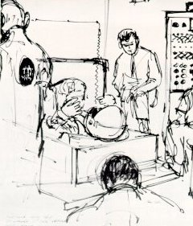 |
Robert McCall, MERCURY SUIT TEST, felt pen on paper |

|
Paul Calle, SUITING UP, pencil and wash on paper |

|
Robert McCall, GANTRY WHITE ROOM, felt pen on paper |
| 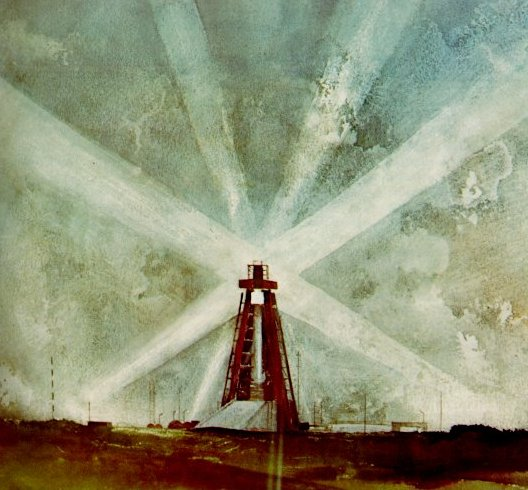 |
| John W. McCoy II, FIRST LIGHT, watercolor on paper |
| 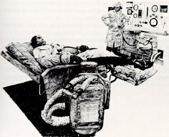 |
Paul Calle, TESTING THE SPACESUIT, pen and ink on paper |

|
Nicholas Solovioff, INSIDE VAB, watercolor on paper |

|
Robert McCall, ROLLOUT, oil on canvas Reproduced courtesy of Life magazine |

|
Tom O'Hara, CHECKING THE COMMAND MODULE, acrylic on paper |
| 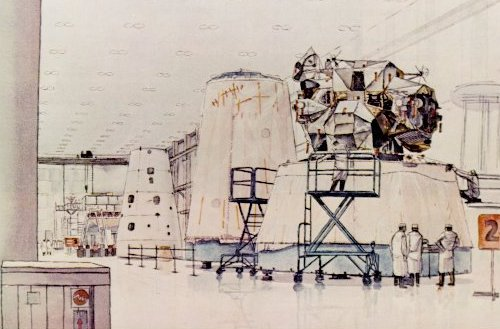 |
|
Billy Morrow Jackson, LUNAR MODULE WHITE ROOM, watercolor on paper |
| 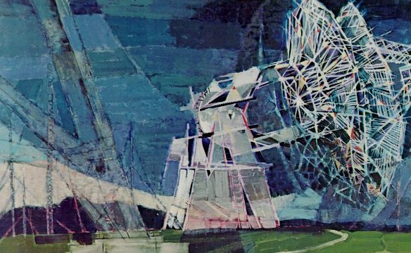 |
|
Paul Arlt, BIG DISH ANTENNAE, TANANARIVE, acrylic on canvas |
| 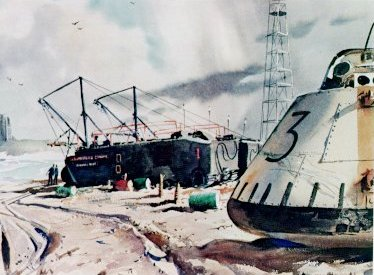 |
John Pike, BOILER PLATE, watercolor on paper |
| 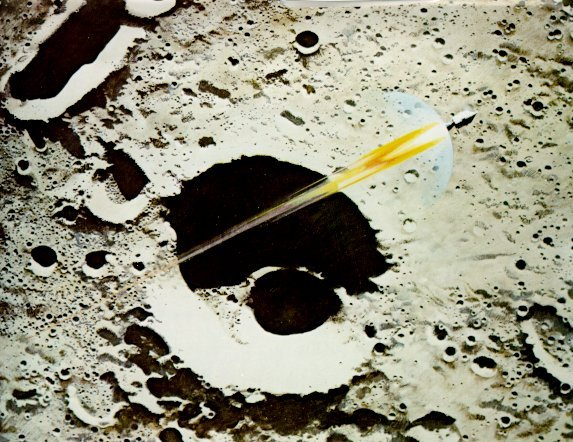 |
| Robert McCall, APOLLO 8 COMING HOME, oil on panel |

|
Paul Calle, INSIDE GEMINI SPACECRAFT, pencil on paper |
| 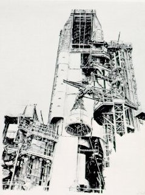 |
Paul Calle, GEMINI SPACECRAFT AND GANTRY, pencil on paper |

|
| Fred Freeman, SATURN BLOCKHOUSE, acrylic on canvas |

|
M. McCaffrey, CHRIS KRAFT AND DR.GILRUTH, mixed media on paper |
| 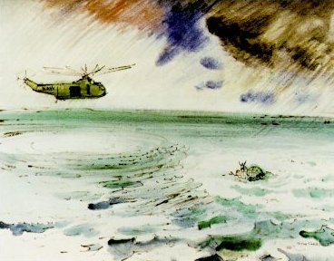 |
Robert McCall, GEMINI RECOVERY, watercolor on paper |
| 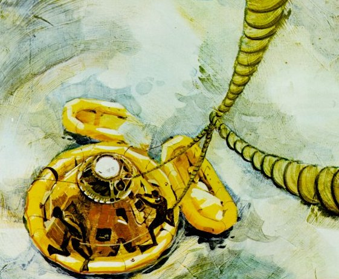 |
| Leonard Dermott, APOLLO 9 COMING ABOARD, acrylic on canvas |
| 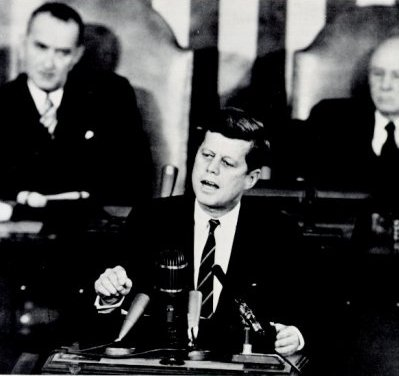 |
| Speaking to Congress and the Nation, President Kennedy said on May 25, 1961: "I believe that this nation should commit itself to achieving the goal, before this decade is out, of landing a man on the Moon and returning him safely to Earth. No single space project in this period will be more impressive to mankind, or more important in the long-range exploration of space; and none will be so difficult or expensive to accomplish." |
| 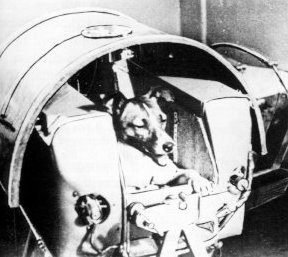 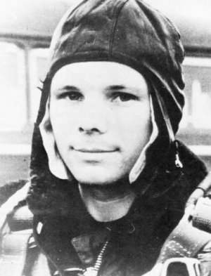 |
| The Russians were ahead. A month after the 184-pound Sputnik I, they sent up the dog Laika (above left) in the 1120-pound Sputnik II. Three years later, on April 12, 1961, Yuri Gagarin (above right and below) became the first man to orbit the Earth. His Vostok I's payload was 10,417 pounds and his flight lasted 108 minutes. At this time, the United States was in the final stage of preparing for its first manned suborbital flight, on May 5, 1961. The physical hazards of weightlessness were then almost wholly unknown. |
| 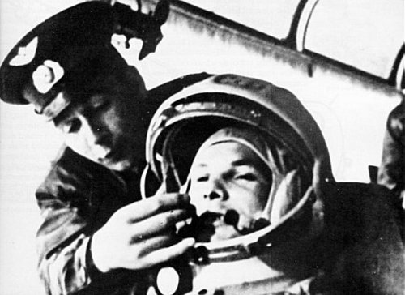 |
| 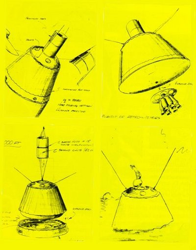 | Engineers brainstormed many ideas. These sketches illustrate some of them. In the upper left a spacecraft is shown still attached to its booster. It has jettisoned nose fairings and deployed its antenna. The drawing to the right of it shows the jettisoning of spent retrorockets as the spacecraft reenters the atmosphere. For reentry the blunt end is pointed in the direction of travel, thus serving as a heat shield. In the lower left sketch the heat shield is jettisoned just before splashdown. The final sketch shows the spacecraft floating safely in the water as an astronaut waves to the recovery team. Caldwell C. Johnson sketched these concepts in May 1958. |
| 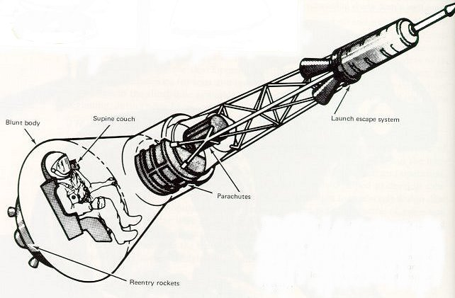 |
| Tests, redesigns, and more tests led to this basic configuration for manned spaceflight. A special escape system would pull the man from an exploding booster. Lying on a tailored couch, he would best withstand the g-loads of launch, abort, and atmospheric reentry. |
| 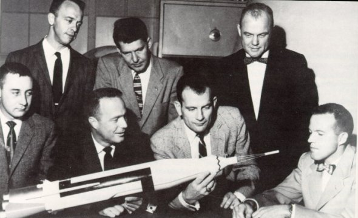 |
| The first seven American astronauts, chosen in April 1 959, were (from left, seated) Virgil I. Grissom, M. Scott Carpenter, Donald K. Slayton, and L. Gordon Cooper, Jr.; (standing) Alan B. Shepard, Jr., Walter M. Schirra, and John H. Glenn, Jr. They were test pilots who volunteered to fly a spacecraft -similar to the model shown- that had not yet been built. |

|
|
"Then, at 900.000 feet, you'll get the feeling that you must have a banana." (From Daily Mail, 23rd February 1960) Animals flew first, paving the way for man. Chimpanzees were physiologically manlike and easily trained. The Air Force's Aeromedical Field Laboratory provided them. |

| Custom-made couches were provided for the chimpanzees before their flights. Sensors attached to the animals and instruments in the spacecraft greatly reduced uncertainty about the effects of severe g-loads an the body of an astronaut. This medical research resulted in the design of a couch for the Mercury capsule that would distribute the occupant's weight and minimize acceleration loads on his body. |
| 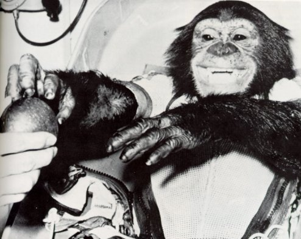 |
| A chimpanzee named Ham, shown hamming it up in the photo below, was "a delightful little fellow". The Mercury-Redstone 2 that carried Ham into space January 31, 1961, over-accelerated and ascended to a higher altitude than planned. Nonetheless, the capsule was recovered with Ham in good shape. He was then retired to a normal lifetime. Mercury researchers, remembering Ham fondly, occasionally visited him afterward. |

| Tiny one-man spacecraft -then called capsules- orbited the Earth in the Mercury program. They were checked out in a hangar at Cape Canaveral before being hoisted up and mated with a launch vehicle. Heat-resistant shingles covered the afterbody. |

| Boiler plate models (below) of escape tower and spacecraft were tested with Little Joe boosters at Wallops Station. Little Joe could briefly deliver up to 250,000 pounds of thrust from eight solid-fuel rockets. These launches were in 1959 and 1960. |

| Maximum public embarrassment in the Mercury program occurred in the inadvertent "tower flight". A circuit quirk cut off the Redstone's engines inches after liftoff. It was just enough to trigger the escape sequence. The engineers could explain it, but the public inevitably wondered if we were really ready to send a man safely into space. |

| Redstone rocket had launched Freedom 7. It reached top speed of 5180 miles an hour on 302-mile trip. Astronaut and capsule both landed in fine shape. Three weeks later President Kennedy proposed that U.S. astronauts go to the Moon in next decade. |

| The first suborbital spaceflight of Project Mercury ended happily when a U.S. Marine helicopter recovery team plucked astronaut Alan B. Shepard, Jr., out of the sea to fly him to the carrier Champlain on May 5, 1961. |

| Shepard reached 116.5-mile altitude on a 15-minute 22-second flight down the Atlantic Missile Range, and found being weightless for 5 minutes pleasant. |

| John Glenn rounded the Earth three times in Friendship 7, enjoyed his February 20, 1962, encounter with zero g, and wished his capsule were glass so that he could see more. Operations rnen on ground feared the heat shield was not locked in place. Glenn, too, had nervous moments and splashed his spacecraft into Atlantic 40 miles short of the projected area. Difficulties in controlling his vehicle intensified engineers' drive for perfect performances. |

|
| A destroyer picked up Glenn's capsule in 17 minutes. He skinned his knuckles blowing the hatch, and said that "it was hot in there". He had lost weight but doctors' exhaustive tests showed no adverse effects from his 4-hour 22-minute flight. City after city feted Glenn, and his capsule was put in the Smithsonian Institution near the Wright brothers' airplane. |
| 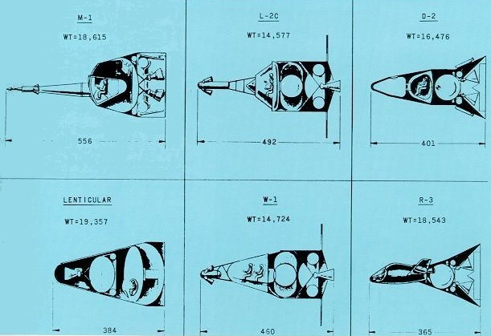 |
| Early proposals for manned space vehicles varied greatly in configuration and weight. In some, the men within faced one way during launch and another during reentry; in others, the vehicle was turned around, not the seats. Different approaches to the problem of escape from launching disaster were shown in these six industrial proposals. Environmental control, thermal and radiation shielding, and protection against meteorite impact were all unknowns facing early spacecraft designers. |
| 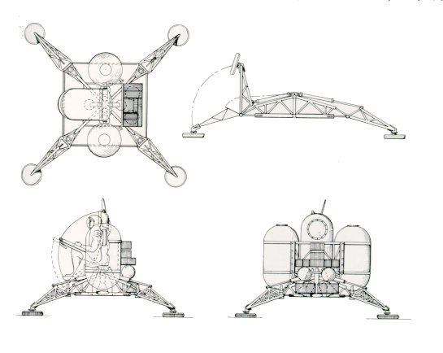 |
| A one-man lunar lander weighing 5000 pounds was envisioned as early as 1961 by a pair of Space Task Group engineers, James A. Chamberlin and James T. Ross, and here drawn by Harry A. Shoaf. It was seen as part of a 35,000-pound payload that might be carried by a post-Mercury spacecraft. The other extreme in early ideas to send men to the Moon called for a direct-ascent manned lunar vehicle weighing some 150,000 pounds. It would have been launched by Nova, a giant booster capable (on paper) of approximately 12 million pounds of thrust. |

| This Gemini spacecraft, in preparation in the Pyrotechnical Installation Building at the Cape, was to climb to a record altitude of 853 miles in September 1966. It docked in space with an Agena, and then used the big Agena rocket for the energy needed to reach the larger orbit. Gemini flights provided priceless experience in the tricky business of rendezvousing two craft in space with the minimum expenditure of energy. They also supplied practice at docking and in extravehicular activity, both needed for future Moon voyages. Finally, they helped build up experience with the mission-control system developing on the ground to support manned spaceflight. |
| 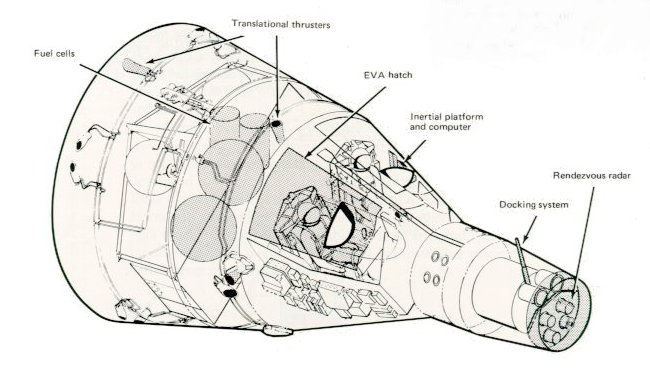 |
| The two-man Gemini seemed capacious after tiny Mercury but it was actually very cramped. The astronauts rubbed elbows, and the man in the right seat, returning after EVA with his bulky spacesuit and tether, had to jam himself in to close the hatch over his head. |

| Gemini launches drew hundreds of thousands of spectators, awed by the roar, flame, and smoke of the big Titan II booster. Viewers clogged the highways and camped by roadsides. Millions of others watched launchings an television, and the astronauts received tumultuous welcomes on their return. The launch at left is Gemini V, which carried Astronauts Cooper and Conrad for 120 revolutions of the Earth during August 1965. Fuel cells had their first space test an this flight. |
| 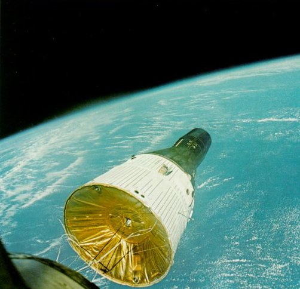 |
| First U.S. rendezvous in space occurred an December 15, 1965, when Gemini VI found and came within 6 feet of Gemini VIl, which had been launched 11 days earlier. Picture below was shot by Tom Stafford, aboard Gemini VI with Wolly Schirra. The other spacecraft, shown here at a range of 37 feet, was flown by astronauts Borman and Lovell in a flight lasting more than 330 hours. Rendezvous proved entirely feasible but tricky to manage with minimum fuel use. |
| 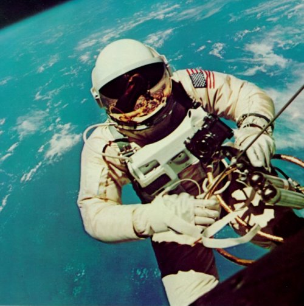 |
| Astronaut Edward H. White was the first American to step outside in space. Jim McDivitt, Gemini IV's command pilot, took this picture on June 3, 1965. A 25-foot umbilical line and tether linked White to the spacecraft. In his left hand is an experimental personal propulsion unit. His chest pack contained an eight-minute emergency oxygen supply, as a backstop. |

|
| An Agena target vehicle was docked with by Gemini VIll on March 16, 1966. A short-circuited thruster set the two craft spinning dangerously, forcing Astronauts Armstrong and Scott to end the mission. |
| 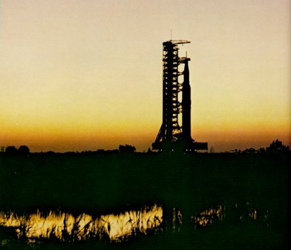 |
| By dawn's first light, a giant Apollo/Saturn V aboard its mobile launcher trundles toward ist rendezvous with the Moon. Riding its crawler past spaceport marshes, the rocket moves at about one mph. (During its voyage in space, a part of it containing men will travel at 24,300 mph.) Nothing of the size and power of this formidable creation had ever been built before. |
| 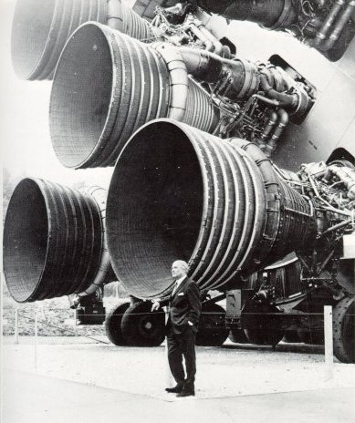 |
Dr. von Braun, standing
next to one of the five engines at the after end of the
Saturn V vehicle's first stage
(on display at the Alabama
Space Museum), provides a
scale reference for the humain figures shown alongside two of the rockets in
the drawing below. The sequence of launch vehicles
of ever-increasing size and
power that led from the 46-foot-high V-2 rocket through
the Mercury and Gemini
boosters to the 363-foot
Saturn V is drawn here at a single scale.
|
|
| 
| |

| The stack: the three-stage launch vehicle, Saturn V, surmounted by its payload, the Apollo spacecraft. The greater part of the launch vehicle consists of tankage for the fuel and for the oxidant, LOX (liquid oxygen), used in all three Saturn V stages. The powerful F-1 engines of the first stage burn kerosene to produce a combined thrust of 7.5 million pounds. The fuel for the J-2 engines of the two upper stages is liquid hydrogen. The combined thrust of the second stage's five engines is just over a million pounds, or five times that of the third stage's single J-2 engine. Development of the original hydrogen tanks was difficult because the low boiling point of hydrogen (-253 C) required insulation sufficient to prevent transfer of heat from the outside and the comparatively warm (-183 C) liquid oxygen. |

| One of the J-2 engines that power the upper stages of Saturn V. Liquid hydrogen, on its way from the fuel turbopump, is used to cool the walls of the thrust chamber regeneratively. |

|
| Thunder echoed in the mountains when a mighty F-1 engine spoke out during qualification. At a remote high-thrust test complex near Edwards, Calif., fuel and LOX were pumped in and tons of water cascaded over the flame deflector while elaborate instrumentation measured the behavior of each new engine. It wasn't flightworthy if it didn't match specs. |

| The first (S-IC) stage of the Saturn V launch vehicle being hoisted into the static test stand at Marshall Space Flight Center. This was the "battleship," or developmental test version of the stage, built heavily to permit repeated testing of flight-version working components. The first three flight S-IC stages were assembled at MSFC and tested in this stand. The massively reinforced construction of the 300-foot-tall stand was essential to withstand the 7.5 million pounds of thrust developed by the stage's engines during static testing. |

| The "pogo problem," a lengthwise mode of vibration recognized in the second Saturn V launch, was speedily solved through mathematical analysis supported by data collected in shake tests. To supplement shake tests in Marshall's Dynamic Test Tower, Boeing quickly erected this tower for special pressure tests at the Michoud Assembly Facility. |

|
| A test at the "Arm Farm". Just to the man's left a skin section representing the S-11 stage is mounted to the Random Motion/Lift-Off Simulator, which can simulate at ground level the swaying of the space vehicle in a Florida storm. A duplicate of the Mobile Launch Tower's S-11 Forward Swingarm projects from the left, carrying the umbilicals that are connected to the skin section. |

|
| An Instrument Unit being readied for checkout at the IBM facility in Huntsville. A cylinder 22.7 feet across and 3 feet high, the structure consists of 24 panels with stiffening rings at the top and bottom. The units that perform the guidance, control, and telemetry functions for the Saturn are mounted to the inside of the cylinder. The foam rubber pads at the top, and the plastic strips around the outside, are for protection during manufacture. |

|
| Pressure test during predelivery checkout of an Instrument Unit at the IBM facility. This IU was destined for Saturn vehicle 505, which launched the Apoilo 10 mission. On the launch pad, the IU, which weighs two tons, sits atop the third (S-IVB) stage, with the Apollo spacecraft directly above it. |

|
| Super Guppy, bigger sister of the aptly named Pregnant Guppy, was the only airplane in the world capable of carrying a complete S-IVB stage. Both aircraft were built by John M. Conroy, who started with the fuselages of two surplus Boeing C-97 Stratocruisers, ballooned out the upper decks enormously, and hinged the front sections so that they could be folded back 110 degrees. Super Guppy flew smoothly at a 250-mph cruising speed, and its cargo deck provided a 25-foot clear diameter. Below, a finished S-IVB stage is being unloaded onto a cargo lift trailer at Kennedy Space Center. |

|
| 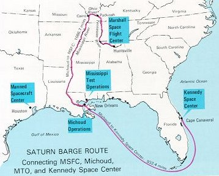 | 
|
| Bulky but fragile, huge launch-vehicle stages could not travel by rail or public road; tunnels, bridges, and low wires would have dictated endless detours. Right, even a comparatively small Saturn I wasn't easy to back into its barge at Huntsville. Below, a rocket-laden barge is escorted by two tugs through Sun-bronzed waters. The biggest California-built parts of Saturn V voyaged by ship through the Panama Canal and across the Gulf of Mexico. |

|

| Silhouetted by the glare of the first Saturn V launch, a flock of birds calmly conducts its dawn patrol of the lagoon. As the vehicle begins to clear the launch pad, several more seconds will pass before the crashing roar reaches the flock. This is Apollo 4, the first "all up" test of the launch vehicle and spacecraft, proving out their flight compatibility in an unmanned Earth-orbiting mission. |

|
| Circling the Moon once every two hours in the CSM, one lunar explorer awaits his colleagues from the lunar surface. At the nose of the craft is the extended docking probe, ready to receive the LM. The bell-shaped rocket engine at the rear must work one more time for return. |

|
| Like a spider dancing upside down the lunar module makes its first solo flight in Earth orbit. The rods protruding from the footpods are to give first indication of contact with the lunar surface. The ladder on the front leg would soon serve Neil Armstrong to take that "small step for a man. . . ." |

|
Above: Looking like a huge toy top
the conical command module
was crammed with some of
the most complex equipment
ever sent into space. The three
astronaut couches were surrounded by instrument panels,
navigation gear, radios, life-support systems, and small
engines to keep it stable during
reentry. The entire cone, 11
feet long and 13 feet in diameter, was protected by a
charring heat shield. The 6.5-ton CM was all that was
finally left of the 3000-ton
Saturn V stack that lifted oft
on the journey to the Moon.
Below: Packed with plumbing and tanks, the service module was the CM's constant companion until just before reentry. So all components not needed during the last few minutes of flight, and therefore requiring no protection against reentry heat, were transported in this module. It carried oxygen for most of the trip; fuel cells to generate electricity (along with the oxygen and hydrogen to run them); small engines to control pitch, roll, and yaw; and a large engine to propel the spacecraft into -and out of- lunar orbit. |
| 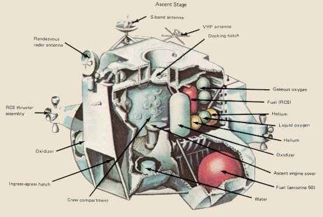 |
| The lunar module was also a two-part spacecraft. Its lower or descent stage had the landing gear and engines and fuel needed for the landing. When the LM blasted off the Moon, the descent stage served as the launching pad for its companion ascent stage, which was also home for the two explorers on the surface. In function if not in looks the LM was like the CM, full of gear to communicate, navigate, and rendezvous. But it also had its own propulsion system, an engine to lift it off the Moon and send it on a course toward the command module orbiting above. |

|
| 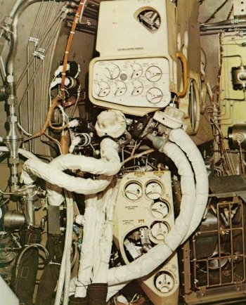 | Like a plumber's dream, the LM's environmental control system nestled in a corner of the ascent stage. Those hoses provided pure oxygen to two astronauts at a pressure one-third that of normal atmosphere, and at a comfortable temperature. The unit recirculated the gas, scrubbed out CO2 and moisture exhaled, and replenished oxygen as it was used up. |

|
| Sound is deadened and not an echo can be heard in this anechoic test chamber. Used to simulate reflection-free space, its floor, walls, and ceiling are completely covered with foam pyramids that absorb stray radiation, so that an antenna's patterns can be accurately measured. Here two NASA engineers inspect a test setup of an astronaut's backpack. Any interference between the astronaut and his small antenna could be detected and fixed before a real astronaut set foot on the Moon. |
| 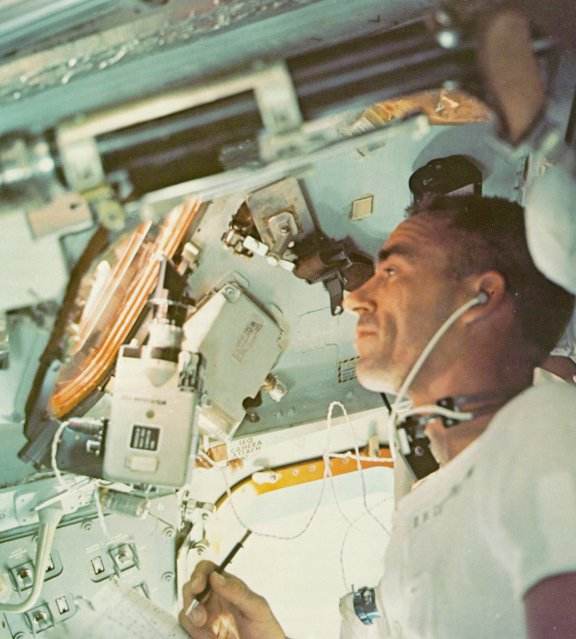 |
| Like new Magellans, astronauts learned to navigate in space. Here Walt Cunningham makes his observations through a spacecraft window. The tools of a space navigator included a sextant to sight on the stars, a gyroscopically stabilized platform to hold a constant reference in space, and a computer to link the data and make the most complex and precise calculations. |
| 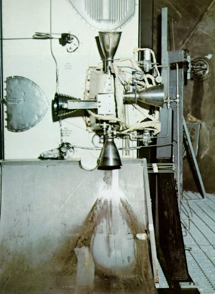 | Because there is no air to deflect, a spacecraft lacks rudders or ailerons. Instead, it has small rocket engines to pitch it up or down, to yaw it left or right, or to roll it about one axis. Sixteen of them were mounted on the service module, in "quads" of four. Here one quad is tested to make sure that hot rocket exhaust will not burn a hole in the spacecraft's thin skin. |
| 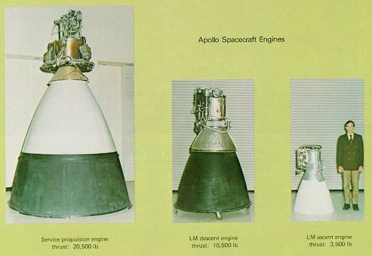 |
| Similar in shape but not size were the three big engines aboard Apollo spacecraft. Two of them had no backup, so they were designed to be the most reliable engines ever built. lf the service-propulsion engine failed in lunar orbit, three astronauts would be unable to return home; if the ascent engine failed on the Moon, it would leave two explorers stranded. (A descent-engine failure would not be as critical, because the ascent engine might be used to save the crew members.) |
| 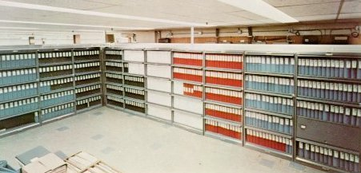 |
| The pedigree of just one Apollo spacecraft took this many books. A mind-numbing degree of documentation contributed to reliability, safety, and success. lf one batch of one alloy in one part was found to be faulty, for example, a search could show if the bad material had found its way into other spacecraft, to lie in wait there. |

|
| Inspecting the new hatch, Wally Schirra makes sure his crew cannot be trapped as was the crew that died in the terrible Apollo spacecraft fire. Opening outward (to swing freely if pressure built up inside), the new hatch had to be much sturdier than the old inward-opening one. The complicated latch sealed against tiny leaks but allowed very rapid release. |

|
| After the fire, flammability and self-extinguishment were key concerns. In the test setup at right a wiring bundle is purposely ignited, using the white flammable material within the coil near the bottom to simulate a short circuit (left). Picture at right shows the aftermath: a fire that initially propagated but soon extinguished itself. It took great effort and ingenuity to devise materials that would not burn violently in the pure-oxygen atmosphere. lf a test was not satisfactory and a fire did not put itself out, the material or wire routing was redesigned and then retested. |

|
| Seared at temperatures hotter than the surface of the Sun, a sample of heat-shield material survives the blast from a space-age furnace. Machines used to check out Apollo components were as demanding as those in the mission itself, because a mistake or miscalibration during preflight trials could easily lay the groundwork for disaster out in unforgiving space. |

|
| Meant to fly in a vacuum, and to survive fiery reentry, the command module had also to serve as a boat. Although its parachutes appeared to lower it gently, its final impact velocity was still a jarring 20 mph. Tests like this one established its resistance to the mechanical and thermal shocks of impact, and its ability to float afterward. |

|
| Hitting land was possible, even though water was the expected landing surface. For this, a shock-absorbing honeycomb between the heat shield and the inner shell was one protection, along with shock absorbers on the couch supports. A third defense against impact was the way each couch was molded to its astronaut's size and shape, to provide him with the maximum support. |

|
| Through the portal of a huge test chamber, the command and service modules can be seen in preparation for a critical test: a simulated run in the entire space environment except for weightlessness. In this vacuum chamber one side of the craft can be cooled to the temperature of black night in space while the opposite side is broiled by an artificial Sun. Will coolant lines freeze or boil? Will the cabin stay habitable? |
| 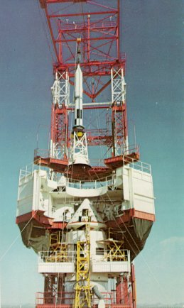 | Escape from disaster was the objective of this spectacular test. The peril occurs in the early moments of launch, when the Saturn V contains thousands of tons of propellant. If things go wrong, the manned command module must be pulled away to a safe distance by the launch-escape rocket. Above, the launch-escape rocket is fitted to a test CM atop a Little Joe II booster. This booster, far cheaper than a Saturn, can duplicate its initial flight phases. |
| 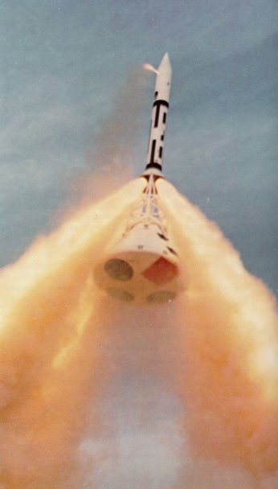 | Up and away goes the command module, when the solid-fuel escape rocket - a single rocket firing through three nozzles - lights off. The sequence is begun only when the booster has accelerated the command module to "worst-case" speeds and heights. As it happened, the escape system was never needed during any of the Apollo launches. |

|
| Charred but perfectly intact, the CM here had passed its most severe test of reentry at a speed of 25,000 mph. From left, Ralph Ruud, Dale Myers, George Low, and Robert Gilruth. |
| 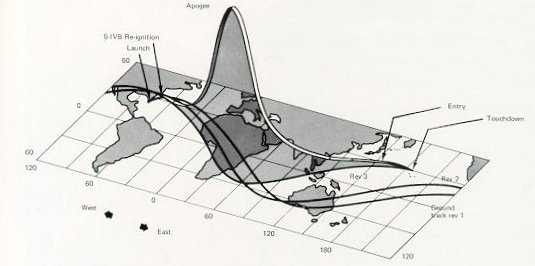 |
| This is the flight path of the Apollo 4 spacecraft above during its trial. First, its booster carried it to its peak altitude, and then its own big rocket accelerated it down into the atmosphere until it reached reentry speed. To an observer it would have appeared like a giant meteorite in the sky. |
| 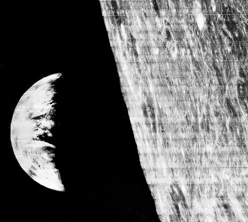 |
| Our first look at Earth rise over the eastern rim of the Moon was radioed back by Lunar Orbiter I on August 23,1966. At the moment this picture was shot, the spacecraft was flying 730 miles above the lunar far side. The photo gave man a disarming view of his own world. But the sweep of tortured lunar surface revealed in the Orbiter pictures was a dramatic preview of the unearthly realm that the Apollo astronauts would soon see. |
| 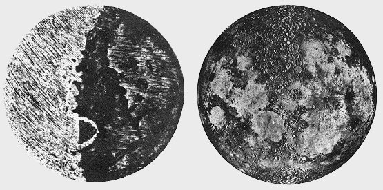 |
| Galileo drew the Moon in 1610 and described its surface as "uneven, rough, replete with cavities and packed with protruding eminences." While a correct description, his details are unrecognizable now. | Harold Urey enhanced our view of the lunar surface by creating this montage made from segments of Lick Observatory photos taken when the Sun angle was low so that shadows emphasized relief. |
 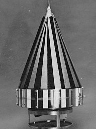 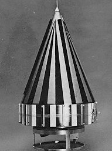
|
| A Juno II launch vehicle was made up of an Army Ballistic Missile Agency's modified Jupiter first stage with a spin-stabilized solid-rocket upper stage developed by the Jet Propulsion Laboratory. JPL also developed the 13.4-lb Pioneer IV payload (right). Launched March 3, 1959, it helped detect and measure the second of the Earth's great radiation belts. |
| 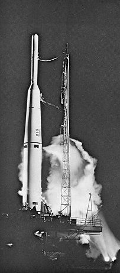 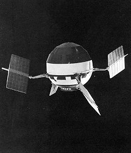 |
| The Thor-Able, with more advanced upper stages, propelled the 94.4-lb Pioneer V spacecraft to escape velocity on March 11, 1960. The instrumentation of this payload (right) measured the Earth's outer magnetosphere, detected an interplanetary magnetic field, helped explain the effect of solar flares on cosmic rays, and first detected the plasma clouds emitted by the Sun during solar storms. But it told nothing new about the Moon. |
| 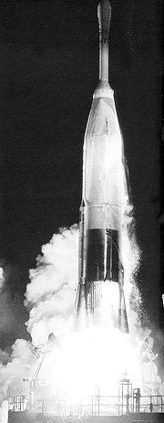 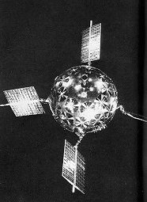 |
| An unsuccessful effort to orbit the Moon was made with the Atlas-Able launch vehicle (left) and the P-31 spacecraft (right). The launch vehicle was capable of injecting 380 lb into a translunar trajectory. The 39-in. spacecraft carried two 18.5-lb-thrust liquid-propellant engines for flight-path corrections and injection into lunar orbit. |
| 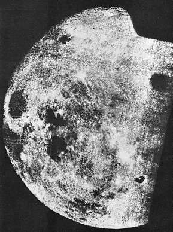 | Mankind's first glimpse of the far side of the Moon came in October 1959, provided by the Soviet spacecraft Luna 3. Although crude compared with later views, its pictures showed a number of lunar features for the first time. One of these was the crater Tsiolkovsky, named for the famed Russian mathematician, which appears here in the lower right as a small sea with an island in it. The images from Luna 3 indicated that the Moon's far side lacked the large mare areas an the side facing Earth. |

| A sophisticated craft for its day, the 800-lb Ranger or its launch vehicle failed in its first six tries. Then it behaved beautifully, returning thousands of pictures in its last three flights, most of them far superior to the best that could be obtained from telescopes on Earth. Rangers crashed on the Moon at nonsurvivable velocity; their work was done in the few short moments from camera turn-on to impact. |
| 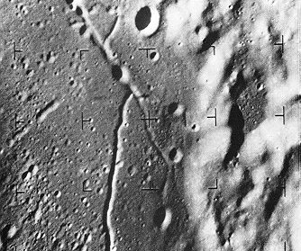 | Heading in toward Alphonsus, a lunar crater of high scientific interest, Ranger IX sent back 5814 pictures of the surface before it crashed. The one at left, taken several score miles away, shows part of the crater floor and slumped wall of Alphonsus, a rille structure, and a varied population of craters. Ranger pictures were exciting in the wholly new details of the Moon that they provided. |

| The last instant before it srnashed, Ranger IX radioed back this historic image, taken at a spacecraft altitude of one-third mile about a quarter of a second before impact. The area pictured is about 200 by 240 feet, and details about one foot in size are shown. The Ranger pictures revealed nothing that discouraged Apollo planners, although they did indicate that choosing an ideally smooth site for a manned landing was not going to be an easy task. |

| The Surveyor mission had been conceived in 1959 as a scheme to soft-land scientific instruments an the Moon's surface. It was a highly ambitious plan that required both development of a radical new launch vehicle and the new technology of a closed-loop, radar-controlled automated landing. The cutaway drawing shows the Atlas-Centaur launch vehicle. The Atlas-Centaur, a major step forward in rocket propulsion, was the first launch vehicle to use the high-energy propellant combination of hydrogen and oxygen. Its new Centaur upper stage, built by General Dynamics, had two Pratt & Whitney RL-10 engines of 15,000-lb thrust each. The first stage was a modified Atlas D having enlarged tanks and increased thrust. |

| The main events in a successful Surveyor landing sequence. |
| 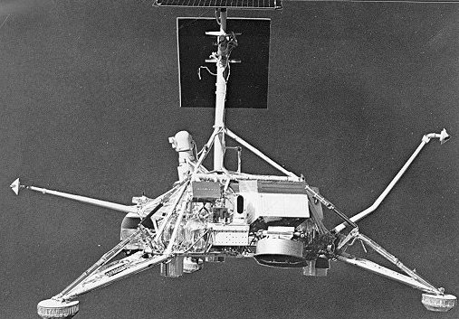 |
| The spidery Surveyor consisted of a tubular framework perched an three shock-absorbing footpads. Despite ist queer appearance, it incorporated some of the most sophisticated automatic systems man had ever hurled into space (see specifications below). The first one launched made a perfect soft landing an the Moon, radioing back to Earth a rich trove of imagery and data. Seven were launched in all; one tumbled during course correction, one went mysteriously mute during landing, and the remaining five were unqualified successes. |
| WEIGHT
Weight at launch 2193 lb Landed weight 625 lb |
| POWER
Solar panel: 90 watts Batteries: 230 ampere-hours |
| COMMUNICATIONS
Dual transmitters: 10 watts each |
| GUIDANCE AND CONTROL
Inertial reference: 3-axis gyros Celestial reference: Sun and Canopus sensors Attitude control: cold gas jets Terminal landing: automated closed loop, with radar altimeter and doppler velocity sensor |
| PROPULSION
Main retrorocket: 9000-lb solid fuel Vernier retrorockets: throttable between 30- and 102-lb thrust each |
| TV CAMERA
Focal length: 25 or 100 mm Aperture: f/4 to f/22 Resolution: 1 mm at 4 m |
|
Typical Surveyor Specifications |
| 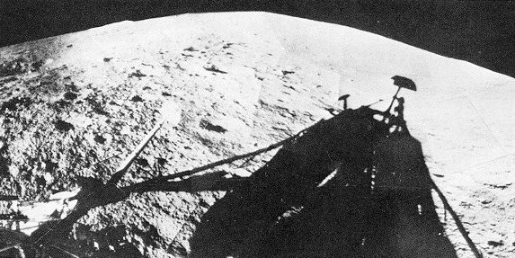 |
| Its insectlike shadow was photographed by Surveyor I on the desolate surface of Oceanus Procellarum. During the long lunar day it shot 10,386 pictures, including the 52 in this mosaic. The noon temperature of 235 F dropped to 250 below zero an hour after the Sun went down. |
| 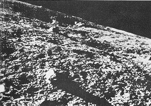 | The first lunar soft landing was accomplished by Russia's Luna 9 on February 3, 1966, about 60 miles northeast of the crater Calaverius. Its pictures showed details down to a tenth of an inch five feet away. They indicated no loose dust layer, both rounded and angular rock fragments, numerous small craters, some with slope angles exceeding 40 degrees, and generally granular surface material. These results increased confidence that the Moon was not dangerously soft for a manned landing. |
| 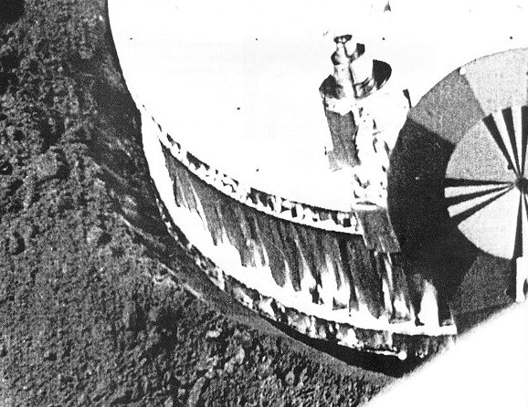 |
| Surveyor I televised excellent pictures of the depth of the depression in the lunar soil made by its footpad when it soft-landed on June 2, 1966, four months after Luna 9. Calculations from these and similar images set at rest anxieties about the load-bearing adequacy of the Moon. Some scientists had theorized that astronauts could be engulfed in dangerously deep dust layers, but Surveyor's footpad pictures, as well as the digging done by the motorized scoop on board, indicated that the Moon would readily support the LM and its astronauts. |
| 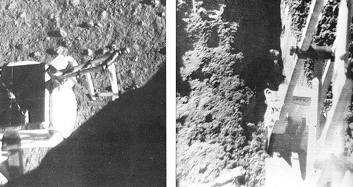 |
| Like a tiny back hoe, the surface sampler fitted to some Surveyors could dig trenches in the lunar soil. Above, the smooth vertical wall left by the scoop indicated the cohesiveness of the fine lunar material. Variations in the amount of current drawn by the sampler motor gave indication of the digging effort needed. At left above, the sampler is shown coming to the rescue when the head of the alpha-scattering instrument failed to deploy on command. After two gentle downward nudges from the scoop, the instrument dropped to the surface. |
| 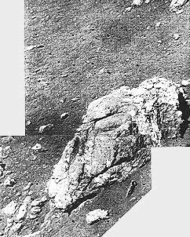 | "A dinosaur's skull" was the joking name that Surveyor I controllers used for this rock. Geologists on the team were more solemn: "A rock about 13 feet away, 12 by 18 inches, subangular in shape with many facets slightly rounded. Lighter parts of the rock have charper features, suggesting greater resistance to erosion." |
| Surveyor VI hopped under its own power to a second site about eight feet from its landing spot. This maneuver made it possible to study the effect of firing rocket engines that impinged an the lunar surface. Picture at left below shows a photometric chart attached to an omni-antenna, which was clean after first landing. Afterward, the chart was coated with an adhering layer of fine soil blasted out of the lunar surface. |

|
| The rolling highlands north of Tycho are portrayed with remarkable clarity in this mosaic assembled from among Surveyor VII's 21,038 photographs. To estimate scale, the boulder in the foreground is 2 feet across, the crater about 5 feet wide, and the far hills and ravines some 8 miles distant. |

|
| Surveyor VII's "garden" was a heavily worked-over area next to the spacecraft. Trenches were dug with the articulated scoop to give data on the mechanical properties of the surface. At left is the alpha-backscattering instrument that provided accurate measurements of the chemical composition of the surface. |

| Lunar Orbiter was planned for use in conjunction with Surveyor; one spacecraft class was to sample the surface of the Moon, and the other was to map potential Apollo landing sites. Five Orbiters were flown, so successfully that they returned not only precision stereo-photography of all contemplated landing areas but also photographed virtually the entire Moon, including the far side. Included in the photographs returned were the landed Surveyor I, the impact crater caused by Ranger VIII, and many breathtaking images of high scientific value. Orbiter coverage is shown at the left. |
| The equatorial Apollo landing zone with its precursor Ranger and Surveyor landing sites. |

|
| The two-eyed robot above is the spacecraft that mapped the Moon for Apollo planners. It was built by Boeing for the NASA Langley Research Center, and launched by an Atlas-Agena. Weighing 850 pounds, it drew electrical power from the four solar-cell arrays shown, which delivered a maximum of 450 watts. The rocket motor at top provided velocity changes for course corrections. Guidance was provided by inertial reference (three-axis gyros), celestial reference (Sun and Canopus sensors), and cold-gas jets to give attitude control. Because it would necessarily be out of touch with Earth during part of every orbit, it carried a computer-programmer that could accept and later carry out up to 16 hours of automatic sequenced operation. |
| It was in its photo system that Orbiter was most unconventional. Other spacecraft took TV images and sent them back to Earth as electrical signals. Orbiter took photographs, developed them on board, and then scanned them with a special photoelectric system - a method that, for all its complications and limitations, could produce images of exceptional quality. One Orbiter camera could resolve details as small as 3 feet from an altitude of 30 nautical miles. A sample complication exacted by this performance: because slow film had to be used (because of risk of radiation fogging), slow shutter speeds were also needed. This meant that, to prevent blurring from spacecraft motion, a velocity-height sensor had to insure that the film was moved a tiny, precise, and compensatory amount during the instant of exposure. |

|
| The youngest big crater on the Moon is Tycho, which is about 53 miles across and nearly 3 miles deep. These Orbiter V photographs reveal its intricate structure. (Area in the rectangle above is pictured in higher resolution below.) A high central peak arises from the rough floor, and the crater wall has extensively slumped. The comparative scarcity of small craters within Tycho indicate its relatively recent origin. Flow features seen in both pictures could have been molten lava, volcanic debris, or fluidized impact-ejected material. Surveyor VII landed about 18 miles north of Tycho, in the area indicated by the white circle above. Enlargements of these pictures show an abundance of fissures and large fractured blocks, particularly near the uppermost wall scarp. |
| This breath-taking view was one of Lunar Orbiter II's most captivating photographic achievements. For many people who had only seen an Earth-based telescopic view looking down into the crater Copernicus, this oblique view suddenly transformed that static lunar feature into a dramatic landscape with rolling mountains, sweeping palisades, and tumbling land-slides. The crater Copernicus is about 60 miles in diameter, 2 miles deep, with 3000-foot cliffs. Peaks near the center of the crater form a mountain range about 10 miles long and 2000 feet high. Lunar Orbiter II recorded this "picture of the year" on November 28, 1964, from 28.4 miles above the surface when it was about 150 miles due south of the crater. |
| The best maps weren't good enough, even though they were based an years of telescopic photography from Earth. In early planning, the rectangle in the map at left was a possibility os a landing site. The handful of craters shown, it was innocently thought, should be easy enough to dodge during the last moments of a piloted landing. The site was an 11- by 20-mile rectangle located in the highlands west of Mare Tranquillitatis. |

|
| The truth about this site was revealed by the accurate eye of Lunar Orbiter II: it was far too rough to be attempted in an early manned landing. In fact, Orbiter pictures showed that parts of the Moon were as rough as a World War I battlefield, with craters within craters, and all parts of the surface tilled and pulverized by a rocky rain. No areas were found smooth enough to meet the original Apollo landing-site criteria, but a few approached it and the presence of a skilled pilot aboard the LM to perform last-minute corrections mode landings possible. The high-quality imagery returned by the Orbiters also returned a harvest of new scientific information. |
|
A typical marked mosaic is reproduced above. It is a view of a
region in Mare Tranquillitatis, and
the area within the set of ellipses
at the far left was chosen as the
target for the first manned landing.
Before it was selected, high-resolution Orbiter Photos were used to
examine details within the landing
ellipses. In those Photos surface
irregularities as small as 3 feet
could be seen. One such mosaic is
reproduced below.
The black cross in a white circle marks the spot where the Apollo 11 astronauts' landing module descended. It was in an elliptical target area only 200 feet wide. |

|
| The picture above is an oblique view of the same area. This Lunar Orbiter photograph illustrates more nearly the way it would look to an astronaut descending to land. The white lines iridicate the elliptical target site and the approach boundaries. Processing flaws such as seen in this picture resulted occasionally from partial sticking of the moist bimat film development used aboard the Orbiter spacecraft. |

|
| Pad A of Launch Complex 39, shortly before a launch. The Mobile Service Structure is parked back by the crawlerway, the crawler separated, and only the Mobile Launcher is on the pad with the vehicle. |

|
| A launch pad looked different in the early days at the Cape. Here Redstone 4 is in final stages of preparation in August 1954. The plume of vapor at the base is oxygen boiling off, a hazard being ignored by the men at work; but the presence of an ambulance suggests awareness that all might not necessarily go well. Central sections of the deployment track are concreted, to keep exhaust gases from tearing up the pad. This launch was successful. |
| John F. Kennedy Space Center, on Merritt Island across the Banana River from Cape Canaveral, was acquired because the Air Force's launch complex at Canaveral did not provide the area needed for the Apollo program. |

|
| The Vehicle Assembly Building - an "intricate machine" to put rockets and spacecraft together - took shape early in 1965. In the foreground is the turning basin for barges to bring in giant rocket stages. At right three big Mobile Launchers are also abuilding. |

|
| In this super-barn, launch vehicles and spacecraft were delicately built up, interconnected in myriad ways, and then exhaustively checked out for any mismatch. |
| Lowering the second (S-II) stage of a Saturn V to mate with the first stage, which is already standing on the launcher. Here the camera is about 200 feet up in a high bay of the Vehicle Assembly Building. |
| Looking down at the space vehicle as it leaves the VAB on the base platform of the Mobile Launcher. The nine swing arms that run from the launcher's tower to the vehicle's various levels are in extended position. |

|
| The first Saturn V space vehicle and its Mobile Launcher on their way out to Launch Pad A atop a transporter. The pad is 3 1/2 miles east of the VAB. The Mobile Service Structure is parked at the loop where the crawlerway to Pad B diverges to the north (right). The barge canal to the VAB runs parallel to the main crawlerway. |

|
| The last Moonbound Apollo-Saturn rolls slowly out of the huge VAB into the morning Sun. Each door of the four VAB bays opens 456 feet high and 75 feet wide. The VAB encloses a volume of 129,482,000 cubic feet. But the tale that clouds form inside and rain falls is only folklore. |
| Mining technology for a Moon launch. Utilizing power shovel design concepts, two 131-foot long, 3000-ton, track-mounted crawlers were built to transport the MSS and an assembled Apollo-Saturn V from the VAB to the pad, and back should hurricane weather threaten a launch. |
| Shipped in sections from Marion, Ohio, the 114-foot wide, X-framed crawlers were assembled on site at the Cape. Four large diesel engines coupled to six electrical generators power crawler's motive, leveling, jacking, and steering systems. Operator's cab, lower right is matched diagonally by another. |

|
| The Mobile Service Structure coming down from the launch pad. About 11 hours before launch, a crawler carries the MSS back from the pad to its parking area. Although the crawler is descending a 5-degree slope, the hydraulic cylinders, shown here fully extended, keep its platform level. |
| A driver eases the crawler beneath a Mobile Launcher; once in place it lifts up both launcher and space vehicle. The driver, who wears a seat belt for his 1-mph trip, is like the helmsman of a ship; the total crawler crew, in control and engine rooms inside, is about 15 men. |
| Balancing its load on its head, a crawler ascends the grade to the launch pad. The unfueled space vehicle and its Mobile Launcher together weigh 6000 tons, and the crawler weighs another 3000 tons. Two tracks at each corner drive the crawler. The individual cleats of the tracks weigh a ton apiece. |
| Dress rehearsal. During a Countdown Demonstration Test, as for an actual Apollo launch, the Mobile Service Structure was removed from the pad at about T-minus-11 hours, leaving the fueled space vehicle in place. The MSS owes its awkward shape to the many platforms built out over the base of the Mobile Launcher to service the rocket. The designers then balanced the MSS by placing the elevators and their machinery at the other side of the structure. |

| Getting set for the flames of an Apollo launch. The thrust chambers of the first stage's five engines extend into the 45-foot-square hole in the Mobile Launcher platform. Until liftoff, the flames will impinge downward onto a flame deflector that diverts the blast lengthwise in the flame trench. Here, a flame deflector coated with a black ceramic is in place below the opening, while a yellow (uncoated) spare deflector rests on its track in the background. It takes a tremendous flow of water (28,000 gollons per minute) to cool the flame deflector and trench. The pumps, which start 8 seconds before ignition, can deliver that flow for 30 seconds, and then a reduced flow for an indefinite period. Another 17,000 gpm of water curtains the Mobile Launcher tower from the rising flames. |
| The white room is the work platform, 400 feet in the air, through which a flight crew is loaded into the spacecraft. The crew arrives at the pad by van, ascends the launcher tower by elevator, and then crosses a swing arm to reach the white room. |
| Checkout and assembly of the Apollo 17 lunar module in a clean room of the Manned Spacecraft Operations Building. In the foreground, the Lunar Roving Vehicle is undergoing its final checkout (with Astronauts Schmitt and Cernan aboard) prior to being packaged and stowed into the descent stage of the lunar module. |
| The newly completed Launch Complex 39 attracted many VIPS. Here Petrone briefs President Johnson and Chancellor Ludwig Erhard of the Federal Republic of Germany in 1966 on the characteristics of the Mobile Launcher. |

|
| TV screens and display panels ablaze, Firing Room 2 of the Launch Control Center, adjacent to the VAB, is the hub of activity for the start of Apollo 6's unmanned Earth-orbit mission. Large wall screens show the Saturn V in readiness. |

| President John F. Kennedy is briefed on the developing plans for Launch Complex 39, designed to carry out his call for men on the Moon before 1970. |
| Apollo 11 lifting off the pad on July 16, 1969, the culmination of years of intense activity at the Cape. In this wide-angle view from the press site, all eyes squint in the direction of the hot morning Sun and the distant Launch Pad 39A, where the exhaust gases of the rocket's first stage have been split by the flame deflector into two distinct columns of flame and smoke. |

|
| The Mission Operations Control Room was the focal point for all the activities of the Mission Control Center. At any time during an Apollo mission, one of the four flight control teams would be manning these consoles. Each controller in this room was supported in his operation by other people and facilities, both in the staff support areas within the building and in the world outside the Center. Since the completion of the Apollo missions, this room and the support areas have been reconfigured for other manned space programs like Skylab and Apollo-Soyuz. |
| Mission Control candid photography by Andrew R. Patnesky |

|
| Flight Director Gene Kranz watches his console display tensely as the Apollo 11 lunar module Eagle slowly settles down with its descent engine fuel supply all but exhausted. Gerry Griffin, a Flight Director during other phases of the mission, looks on in complete absorption. |

| As the Apollo 11 lunar module begins the descent toward its historic touchdown, off-duty Operations Team members watch unobtrusively from a few extra chairs in the Mission Operations Control Room. |

| A television monitor at the front of the Mission Operations Control Room displays real-time images of Astronauts Armstrong and Aldrin at work on the Moon. |
| The lightning bolt that struck Apollo 12 aloft also hit the crane an platform of the mobile launcher. |
| During the Apollo 13 crisis the Mission Control directors discussed possible landing recovery options. Because of the unique configuration (the LM still attached to the CM) new procedures leading to reentry were developed. Ten phone lines were open between Mission Control and experts at the Grumman plant. Engineers in Downey, Calif., where Odyssey was built, ran emergency problems through Computers and at MIT a team worked through the night on the guidance system and prepared new trajectories. Perseverance and ingenuity were rewarded with a safe landing in the Pacific less than 4 miles from the USS Iwo Jima. |

| When the Apollo 14 crew was unable, after repeated attempts, to dock with the lunar module, the Operations Team was faced with the prospect of having to abort the mission. In order to work out new procedures, Mission Control hastily located a docking probe and drogue. Flight Controller John Llewellyn (left) discusses possible solutions with Bob Gilruth, George Abbey, and John Young. The crew docked successfully with the new procedure, and had no trouble docking again. |

|
| Resembling a porpoise with its bottle-nosed antenna housing, this converted KC-135 tanker was one of four Apollo Range and Instrumentation Aircraft. ARIA supplied voice and telemetry coverage to the Apollo spacecraft over those parts of the Earth orbits that were beyond the reach of the ground stations. |
| The 85-foot paraboloid at the Honeysuckle tracking station in Australia is one of the three primary antennas on which MSFN depends for tracking at lunar distances. All three are located alongside similar dishes of the Deep Space Network. This redundancy increased Apollo mission safety. |
| The tracking ship Vanguard was positioned, for Apollo launches, in an area of the Atlantic Ocean where there are no island stations. It provided tracking, telemetry, and voice coverage during the insertion into Earth orbit, As many as five tracking ships were employed on the early Apollo missions. |
| In Mercury days, with a one-man spacecraft in Earth orbit, this control center was sufficient. |

|
|
By Apollo, with three men in two spacecraft at lunar
distances, Mission Control had grown.
An array of specialists manned the consoles during an Apollo mission. Key numbers above identify the locations of flight controllers. 1 was the Booster Systems Engineer, responsible for the three Saturn stages. 2 was the Retrofire Officer, keeping continuous track of abort and return-to-Earth options. 3 was the Flight Dynamics Officer, in charge of monitoring trajectories and planning major spacecraft maneuvers; he also managed onboard propulsion systems. 4 was the Guidance Officer, who watched over the CSM and LM computers and the abort guidance system. In the second row, 5 was the Flight Surgeon, keeping an eye on the condition of the flight crew. At 6 was the Spacecraft Communicator, an Astronaut and member of the support crew, who sent up the Flight Director's instructions. (He was usually called CapCom, for Capsule Communicator, from Mercury days.) 7 concerned CSM and LM systems, including guidance and navigation hardware; and electrical, environmental, and communications systems. After Apollo 11, all communications systems were consolidated as a separate task. On the next row in the middle was 8, the Flight Director, the team leader. 9 was the Operations and Procedures Officer, who kept the team - in and out of the Center - working together in an integrated way. 10 was the Network Controller, who coordinated the worldwide communications links. 11 was the Flight Activities Officer, who kept track of flight crew activities in relationship to the mission's time line. 12 was the Public Affairs Officer who served as the radio and TV voice of Mission Control. 13 was the Director of Flight Operations; 14 the Mission Director from NASA Headquarters; and 15 the Department of Defense representative. During activity on the lunar surface an Experiments Officer manned the console at 1 to direct scientific activities and relay word from the science team. |
| Only minutes before this picture was taken, Jack Swigert had made the call, "Houston, we've had a problem." Left to right, Christopher C. Kraft, Jr., Deputy Director of the Manned Spacecraft Center; James A. McDivitt, Apollo Spacecraft Program Manager; and Robert R. Gilruth, Director of the Manned Spacecraft Center. |

| Astronauts assigned to an upcoming mission took particular interest in following the current flight from the Mission Control Center. In this picture, taken during the Apollo 10 mission, Neil Armstrong (left) and Buzz Aldrin (right) discuss the lunar orbit activities in progress with astronaut-scientist Jack Schmitt. |
| A long moment of quiet satisfaction in the Mission Operations Control Room during the Apollo 11 mission, as George Low and Robert Gilruth look past their consoles toward a television monitor where they can watch astronauts Armstrong and Aldrin walking on the Moon. |
| Standing at the rim of the Rio Grande gorge near Taos, N. Mex., Apollo 15 astronauts Jim Irwin and Dave Scott see a landscape remarkably like the one they visited at the Hadley Rille landing site on the Moon. Each Astronaut team participated in a series of geology field trips to acquaint them with the kinds of field observation that would be most useful to lunar scientists, the types of rock specimen they should particularly try to sample, and the special problems in working with their equipment on the general terrain they would encounter. |
| Astronauts and their instructor take notes on their field observations during a geology training trip into the Grand Canyon, in Arizona. Although the rocks that are exposed at the Grand Canyon do not resemble lunar rocks in any way, the trip here was an important step in familiarizing the astronauts with the basics of geology, so that they could function well as observers and collectors. |
| Apollo 13 Astronauts Fred Haise and Jim Lovell observe features of a lava flow near Hilo, Hawaii, during a geology field training trip. They used such items of lunar equipment as the handtool carrier behind them and the Hasselblad cameras mounted on their chest packs. As fate would have it, this pair did not have the chance to use their training. |
| Although it was past 2 a.m., a crowd of more than 2000 people was on hand at Ellington Air Force Base to welcome the members of the Apollo 8 crew back home. Astronauts Frank Borman, James Lovell, and William Anders had just flown to Houston from the Pacific recovery area by way of Hawaii. The three crewmen of the first manned lunar-orbit mission are standing at the microphones in the center of the picture. |

| Apollo 8 crewman Frank Borman gets a warm greeting from Robert Gilruth, the Manned Spacecraft Center Director, upon his arrival at Ellington Air Force Base, just outside Houston. Looking on is Edwin Borman, the astronaut's 15-year-old son. William Anders and his family are in the background. |
| Footprints on the plain at Hadley, beneath the unearthly Apennines, were made by men who had walked the long path of astronaut selection and training. To be one of the dozen men who have so far walked the Moon was to have survived close screening for physical and mental excellence, and to have emerged successfully from long, intensive, and often competitive training. |

|
Apollo 1 Edward H. White II, senior pilot Virgil I. Grissom, command pilot Roger B. Chaffee, pilot |

|
Apollo 7 R. Walter Cunningham, lunar module pilot Walter M. Schirra, Jr., commander Donn F. Eisele, command module pilot |
|
Apollo 8 James A. Lovell, command module pilot William A. Anders, lunar module pilot Frank Borman, commander |
|
Apollo 9 James A. McDivitt, commander David R. Scott, command module pilot Russell L. Schweickart, lunar module pilot |
|
Apollo 10 Eugene A. Cernan, lunar module pilot John W. Young, command module pilot Thomas P. Stafford, commander |

|
Apollo 11 Neil A. Armstrong, commander Michael Collins, command module pilot Edwin E. Aldrin, Jr., lunar module pilot |
|
Apollo 12 Charles Conrad, Jr., commander Richard F. Gordon, command module pilot Alan L. Bean, lunar module pilot |

|
Apollo 13 Fred W. Haise, Jr., lunar module pilot James A. Lovell, commander John L. Swigert, Jr., command module pilot |

|
Apollo 14 Stuart A. Roosa, command module pilot Alan B. Shepard, Jr., commander Edgar D. Mitchell, lunar module pilot |

|
Apollo 15 David R. Scott, commander Alfred M. Worden, command module pilot James B. Irwin, lunar module pilot |

|
Apollo 16 Thomas K. Mattingly II, command module pilot John W. Young, commander Charies M. Duke, Jr., lunar module pilot |
|
Apollo 17 Harrison H. Schmitt, lunar module pilot Ronald E. Evans, command module pilot Eugene A. Cernan, commander |

|
| "The great train wreck" was John Young's description of the contraption beyond the console. At the top of the stairs was a compartment that exactly duplicated a command module control area, with all switches and equipment. Astronauts spent countless hours lying on their backs in the CM simulator in Houston. Panel lights came on and off, gauges registered consumables, and navigational data were displayed. Movie screens replaced the spacecraft windows and reflected whatever the computer was thinking as a result of the combined input from the console outside and astronaut responses. Here the astronauts practiced spacecraft rendezvous, star alignment, and stabilizing a tumbling spacecraft. The thousands of hours of training in this collection of curiously angled cubicles paid off. Many of the problems that showed up in flight had already been considered and it was then merely a matter of keying in the proper responses. At left (below), Charles Conrad and Alan Bean in the LM simulator at Cape Kennedy prepare to cope with any possible malfunctions that the controllers at the console outside could think up to test their familiarity with the spacecraft and its systems. |

|
| Neil Armstrong contemplates the distance between the footpad and the lowest rung: would he be able to get back up? (The bottom of the ladder had to end high to allow for shock-absorber compression of the LM leg.) He decided he could do it. Ascent proved no problem in reduced lunar gravity. |

| Preparing for the unknown was a challenge. How much work could be done by a man within a pressurized (and hence stiff-jointed) spacesuit? What effect would the lesser lunar gravity have on his efforts? This truck-borne hoist, adjusted to take out five-sixths of his weight, gave preliminary indications. It also previewed the loping and kangaroo-hopping gaits that would occur on the Moon. A different way to simulate lunar gravity was also tried out; see the rig here. |

| Coming down easy on an unknown surface with limited fuel would take great piloting skill. This giant gantry at the Langley Research Center was used by research pilots to aid LM design, and to explore piloting techniques having the least risk of damage or upset. This multiple-exposure shot shows a landing with little forward movement at touchdown. |

|
| The Flying Bedstead, officially the Lunar Landing Training Vehicle, made everyone a bit tense. (The picture below shows Al Shepard beginning a run.) Its jet engine and thrusters gave an excellent feel for landing the LM, but it was cranky, unforgiving, and uncontrollable if allowed to tilt toomuch. |

|
| If the bedstead went flooey, it was time to leave. Here research pilot Stuart Present ejects, to parachute to safety. In all, two research pilots and Neil Armstrong had to bail out. But when NASA brass suggested dropping the risky trainer, astronauts who'd already made Moon landings vetoed it, insisting it accurately forecast LM handling. |

|
| On mock lunar terrain, wearing restrictive pressure suits, Schmitt and Cernan practiced collecting geological samples. They were drilled in formal sampling procedure: locate, radio description of size and color, photograph in place by the gnomon, and then collect in numbered plastic bags. |
| Fitted with Earth wheels and performance characteristics to match those expected on the Moon, a version of the Moon buggy was driven on rough terrain until its handling traits were second nature to the astronauts. They learned its steering feel, braking ability, and grew familiar with its guidance and navigation calculator. Here Astronauts Scott and Irwin practice for Apollo 15. |

|
| It's a long way down. The astronauts had to train for the possibility that during countdown their launch vehicle could turn into a bomb. The rig shown here was practice for a ride for life from the 320 ft level of the Mobile Launcher. The astronauts would, if necessary, enter the cab and zoom down the guide wire into an underground, padded and insulated room, safe from explosion. Astronaut Roosa prepares to climb down. |

| Getting in and out of the hatch: a necessary element in training. Before launch, an astronaut had to fit into a very cramped space without rearranging preset console switches. During return from the Moon, it was also necessary for one man to get out and return through the CM hatch to retrieve the film and data cassettes from the service module. |

|
| A constant companion to an Astronaut during his training was the graceful twin-engined T-38, a two-seat jet that was fine for aerobatics. T-38's were handy for the incessant travel - to California, New York, the Cape, and way stations - that was called for by the policy of involving astronauts in spacecraft development. And to men who had in the main been expert test pilots, the agile T-38 was both a means of keeping sharp and a resource offering privacy and pleasure. |

| Mike Collins, left, lands after an exhilarating session of aerobatics. The T-38 was useful not just as a means of keeping piloting skills fine-honed but also to keep up g-load tolerances and inner-ear response to weightlessness. Plenty of flight hours before launch seemed to reduce the tendency toward nausea during initial exposure to weightlessness during spaceflight. |

|
| A parabolic flight path in a jet transport could create up to 30 seconds of zero gravity, enough to practice exit through a spacecraft hatch (above). Two earthbound simulations of reduced or zero gravity are shown at right and below. Wearing pressure suits carefully weighted to neutral buoyancy, astronauts in a big water tank learn the techniques needed to work effectively in space. Below, ingenious slings are supported by wires running to a trolley high above. The angled panels on which the man walks or runs are offset just enough from directly under the trolley to simulate the sixth of Earth gravity that prevails on the Moon. |

|
| Desert survival training was part of the regular program of what-ifs. If any flight had ended with an emergency landing in a desert, sun-protective dress and tents could have been fashioned from spacecraft parachutes. The astronauts were taught the best tricks for survival in the desert. Left to right, seated: Borman, Lovell, Young, Conrad, McDivitt, White. Standing: training officer Zedehar, Stafford, Slayton, Armstrong, and See. |
| Saying a few words to a sea of friendly faces was the lot of the Apollo 11 astronauts, whose world tour aboard Air Force One took them to a dizzying 24 countries in 45 days. |

|
| Children of Kinshasa dance a special welcome for the men from the Moon. Tact, diplomacy, an iron constitution, and a knack for public speaking were what the astronauts needed on tours. |

|

|
| Lifeless and slowly tumbling, the S-IB stage that put Apollo 7 in orbit gave Astronauts Schirra, Eisele, and Cunningham man's first ride atop a load of liquid hydrogen. Now the spent 59-foot stage served as a passive target for practice in rendezvous, with one run starting from a distance of 80 miles. |

|
| A fiery exhaust plume trails Apollo 6 during the first stage of launch. Second-stage burn was marred by premature shutdown of three of the five J-2 engines, causing the craft to enter an elliptical rather than a circular orbit. Many months of technical detective work identified the bellows in one liquid hydrogen fuel line (bottom) as the culprit. In flight the bellows had flexed excessively, cracked, and leaked fuel. A redesigned fuel line substituted specially placed bends for the bellows. |

| Snug-fitting cocoon housing the Apollo 7 service module is carefully extracted by workmen from the Super Guppy, the specially built cargo transport plane. The SM will be mated with its CM and then fully tested to confirm compatibility. |

| Mini TV camera is demonstrated by engineer. On Apollo 7 it produced the first live television broadcast from space, a seven minute segment with Astronauts Schirra, Eisele, and Cunningham displaying hand-printed signs, and head colds. A similar camera was used on Apollo 8. |
| A prelaunch conference at Cape Kennedy shows no sign of prelaunch tension. Apollo 7 Commander Wally Schirra raises his coffee cup, with Cunningham at his right. Eisele is at the extreme right, in sweater. Al Shepard looks over General Phillips' shoulder. At Phillips' left is George Low; across the table is Rocco Petrone. |
| Lifting off for the first time with men aboard, the Saturn IB and its hydrogen-fueled upper stage carry the Apollo 7 command and service module toward Earth orbit. This was the first trial of the intensively reengineered CSM, and to the relief of NASA it performed beautifully, staying in orbit for 10.8 days, longer than a Moon landing mission would require. |
| An exciting Earthrise greets the Apollo 8 crew as they return from the far side of the Moon. This was the first time men had ever directly seen Earthrise or the far side, though photos had been taken earlier. Potential landing sites were photographed from the 70-mile-high orbit. |
|
Graduated missions led confidently to a landing on the Moon We designed seven types of missions to test the suitability and safety of all equipment in all mission phases. These were designated by letters A through G:
- S. C. P. |
| Gag card is held before TV camera by Apollo 7 Commander Wally Schirra during third day of the first manned Apollo mission. CM pilot Donn Eisele looks on. TV coverage using the small, hand-held camera was to have begun on the second day but minor tasks used more than the expected time. Another sign displayed during the nation-wide broadcast greeted viewers from "the lovely Apollo room high atop everything". |
  |
| "Stable two", an engineering euphemism for upside-down, was one of the ways that the command module could float and this was the way that Apollo 7 splashed down. The astronauts hung from their restraining belts for a few minutes until three righting bags were inflated to flip the spacecraft. The photo sequence above and below, not the actual Apollo 7 landing, shows a training session, one of many constantly held to drill recovery teams and astronauts. Not used in this exercise was the flotation collar, normally fixed around the command module, that provided insurance against swamping from water taken aboard through the open hatch. |

|
| Intently watching the dials above them, the crew of Apollo 8, Anders , Lovell, Borman, left to right, rehearse for their lunar orbit mission inside a simulator at the Kennedy Space Center. Simulation was a central feature of the training given flight crews and mission controllers. |

| Like a whirling dervish, the path of Apollo 8 about the Earth and Moon spanned seven days and well over half a million miles. Ten lunar revolutions, at distances as close as 60 miles, were made. Translunar trip takes about 20 percent longer than the return trip because going out one has to overcome the stronger gravity of the Earth but can capitalize on it coming back. Not shown is the solar orbit trajectory taken by the burned S-IVB stage. |
| Brightly lit panel lights and screens confront Green Team Flight Director for Apollo 8, Cliff Charlesworth, at his console in the Mission Control Room in Houston. The radio signal between here and the Moon took three seconds roundtrip. |
| Walt Cunningham, lunar module pilot on Apollo 7 (which carried no LM), makes notes while a spare film magazine floats weightlessly a few inches above his pen. To "park" something in space, it had to be left with zero motion. |
| Terraced inner walls lead from the rim of the crater Langrenus down to the smooth crater floor, broken by some central peaks. Langrenus is about 85 miles in diameter and its smooth, worn walls suggest that it is fairly old. The photo was taken from an altitude of some 150 miles. |
| Slashing across the floor of the crater Goclenius, which is about 40 miles in diameter, are strange trenches called rilles. One rille extends over the entire crater floor, across the central peak, and continues up over the rim and out along the surrounding mare. This is only part of an Apollo 8 telephoto negative. |

| Blazing across the sky, the Apollo 8 command module returns home. A Pan-Am pilot on his way to Honolulu from Fiji glimpsed the sight, and estimated that the fiery streak was as much as 125 miles long. The glowing tail made the spacecraft look like a meteor. This unusual photo was taken by a special USAF camera on a KC-135 aircraft at 40,000 feet. |
| Charred and dripping, the Apollo 8 command module is hoisted from the Pacific and eased down an its trailer aboard the USS Yorktown. Its remaining propellants have to be drained off and its precious film magazines recovered. Then spacecraft engineers will go over it carefully to study the effects of a trip around the Moon. |
| An early-morning reception took place aboard the USS Yorktown in the Pacific on December 27, 1968. At left, Apollo 8 Commander Frank Borman thanked the crew for giving up Christmas at home so that the carrier could serve as the prime recovery ship. Astronauts Lovell and Anders stood beside Borman. |

| A joint session of Congress convened to hear the first men to fly around the Moon. That's Borman at the Speaker's rostrum with Lovell and Anders wearing expressions of somber dignity. Public appearances were a demanding part of the job. |

| On a six-city tour, the Apollo 8 astronauts and their wives received a warm welcome and round of tributes. Here New York Governor Nelson Rockefeller is presenting them with a commemorative Steuben glassware plate titled "The Mountains of the Moon". |

| In the United Nations, Secretary General U Thant introduced the astronauts and their families to meimbers assembled in the Security Council chambers. No simulations in Houston nor the Cape had prepared them for this kind of public attention. |

|
| Gleaming in the sunlight, Spider and Gumdrop are hard-docked while two of the three-man crew venture outside. CM pilot Dave Scott, breathing through an umbilical connection, pokes his head out the command-module hatch. The picture was taken by LM pilot Rusty Schweickart (who wore an independent life-support pack) while perched on the lunar module's "front porch". |
| First manned flight of an unearthly spacecraft (it couldn't survive atmospheric reentry) took place over the cloud-shrouded Sahara, above. Note the contact probes projecting from the footpads, and the ladder leading from the "front porch" with their "golden slippers" boot retainers. Below, after its landing stage has been jettisoned, the lunar module returns from the successful completion of the first rendezvous. Before docking begins, it rotates in front of CM windows to be inspected for possible damage. The bell of the vital ascent engine protrudes from a nest of foil thermal insulation. |

|
| The rendezvous radar antenna on the LM, untried in space, was photographed through a CM window by one of the Apollo 9 crew, perhaps in anticipation of the fact that it would soon be unstowed, powered up, and put to the all-important test. A critical and sophisticated part of the rendezvous system, it worked beautifully when tried two days roter. The curved metal strap at the extreme left, not part of the antenna, is a handrail to be grasped by an Astronaut floating outside the spacecraft. |
| In the cheerful mood prevailing when the three crew members were back together, Dave Scott mugs for Rusty Schweickart's camera. Here he shows how he, when alone in the command module, had had to peer against the glare to catch his first glimpse of the LM as it flew back in rendezvous. |

| Five hard days of carefully doing what had never been done before shows in the strained face of Apollo 9 Commander Jim McDivitt, normally a relaxed and equable man. Attempting to describe the cool courage of McDivitt and Schweickart when they went off for the first time over the horizon in the unlandabie LM, some observers declared it the bravest act since man first ate a raw oyster. |

|
| Glistening in the sunlight, reflecting the Moon in bright metal as yet undarkened by the savage heat of atmospheric reentry, the Apollo 10 command module ghosts silently within a few yards of its lunar module, occupied by Gene Cernan and Tom Stafford. John Young is alone in the command module at this point. The background is the far side of the Moon, about 60 miles down. |

| Shaving in space, expected to be a problem (neither astronauts nor delicate mechanism would thrive in a whiskery atmosphere), proved to be no problem at all with an adequately sticky lather. Looking on is Apollo 10 Commander Stafford. |
| A meal, not a map, is what Gene Cernan is holding up here. It's a plastic envelope containing a chicken and vegetabie mix; und with hot water added it made a palatable main course. In the Mercury days space food had been almost as grim as Army survival rations, but during Apollo the eating grew a lot better. By the end of the program, individual astronaut preferences were reflected in the flight menus, and spooned dishes and sandwich spreads were available. |

|
| Manning his control console in the Mission Control Center in Houston is George M. Low, then Apollo Spacecraft Program Manager. Behind him is Chris Kraft, Director of Flight Operations at the Manned Spacecraft Center. They and the other men in the photo are viewing a color television transmission from the Apollo 10 during the second day of ist lunar orbit mission. The spacecraft at this point was some 112,000 miles from the Earth, about halfway to the Moon. Low's TV monitor is off to the left. |

|
| Dawn was just breaking as Apollo 10 gently floated down into the Pacific 395 miles east of Pago Pago. The pinpoint landing was so accurate that the blinking tracking lights on the spacecraft were visible from the USS Princeton during the descent. |

| Flotation collar secured, frogmen get ready to assist the Apollo 10 astronauts from the command module. Named Charlie Brown, the CM landed three and a half miles from the USS Princeton. About one-half hour later the astronauts were aboard the recovery ship, having spent eight days in space. |
| Returning from the dress rehearsal, Commander Thomas P. Stafford is aided from the command module by frogmen. By demonstrating lunar orbit rendezvous and the LM descent system, this lunar orbit mission set the stage for Apollo 11, which flew two months later and put men on the Moon. |
| Hoist away! Shortly after they come down from space, the astronauts go back up; this time only briefly as the cage and sling carry them one at a time to the recovery helicopter hovering above (the camera freezes two of its blades). |
| Glad to be home. Standing in the copter doorway the jubilant Apollo 10 crew smile at well-wishers aboard the Princeton. From left: LM Pilot Gene Cernan, Commander Tom Stafford, and CM Pilot John Young. The Apollo 10 splashdown was near American Samoa. |

|
| The loneliness of space exploration is captured in this picture of Buzz Aldrin standing by Eagle's foil-wrapped footpad. (But a tiny image of Armstrong taking the photograph can be seen on his reflective faceplate.) The slightly arms-out stance derives from the pressurized suit. A plaque on the landing stage, which is still on the Moon, is engraved: "Here men from the planet Earth first set foot upon the Moon, July 1969, A.D. We came in peace for all mankind." |
|
Prelude
All was ready. Everything had been done. Projects Mercury and Gemini. Seven years of Project Apollo. The work of more than 300,000 Americans. Six previous unmanned and manned Apollo flights. Planning, testing, analyzing, training. The time had come. We had a great deal of confidence. We had confidence in our hardware: the Saturn rocket, the command module, and the lunar module. All flight segments had been flown on the earlier Apollo fights with the exception of the descent to and the accent from the Moon's surface and, of course, the exploration work on the surface. These portions were far from trivial, however, and we had concentrated our training on them. Months of simulation with our colleagues in the Mission Control Center had convinced us that they were ready. Although confident, we were certainly not overconfident. In research and in exploration, the unexpected is always expected. We were not overly concerned with our safety, but we would not be surprised if a malfunction or an unforeseen occurrence prevented a successful lunar landing. As we ascended in the elevator to the top of the Saturn on the morning of July 16, 1969, we knew that hundreds of thousands of Americans had given their best effort to give us this chance. Now it was time for us to give our best. |
| Edwin E. Aldrin, Jr., then an Air Force colonel, was the lunar module pilot for Apollo 11 . He had graduated third in his class at West Point, and earned a Ph.D. in astronautics at MIT. His prior space experience was as pilot for Gemini 12. |
| Michael Collins was the command module pilot, in orbit above the two others on the surface. A West Pointer and Air Force lieutenant colonel, he had flown in Gemini 10. These unsmiling photos were taken before the mission; but also see here. |

| Neil Armstrong, commander of Apollo 11, a civilian, had flown in space in Gemini 8. An engineer and test pilot, he once flew the X-15 above 200,000 feet and at more than 4000 mph. |
| Striding confidently toward the transfer van that will carry them to the launch pad, Apollo 11 Commander Armstrong leads Collins and Aldrin past well-wishers at the start of their historic voyage. Since they are suited up with helmets in place, they carry portable breathing and cooling systems until they can plug into the environmental-control systems aboard their spacecraft. |

| During the cruise phase there was less work and less tension, although housekeeping and navigational duties still had to be done. Here Aldrin in the lunar module listens to numbers from Houston. |

| The TV camera with its monitor taped to it was also fired up when work permitted to send back to Earth imagery of itself and of the Moon, as well as homey details in Columbia. TV imagery was good, though poorer than an later missions. |

| Its legs folded up for launch, the lunar module looked like this as the command module eased in to dock and draw it free from the third stage of the Saturn launch vehicle. |
| An offset docking target on the LM lined up with the pilot's window on the CSM if align- ment was right. Then an array of powerful latches locked the two spacecraft together. |
| The unknown that is soon to be known: This picture shows the Apollo 11 landing site one orbit before descent was begun. Tranquility Base is near the shadow line, a little to the right of center. The big jagged shape to the left is not a shadow but an out-of-focus LM thruster. |

|
| "You cats take it easy," Collins radioed in farewell as the lunar module separated - for its historic descent to the surface of the Moon. The three probes extending below the footpads were to turn on a contact light reporting when the LM was within a few feet of the surface. On the nearest landing leg note the ladder giving access to the surface from the cabin at the top. The exhaust bell of the big descent engine can be seen in the center. It made two burns, finally settling the LM gently on the surface with only seconds of fuel remaining. |

| Leaving the ninth step of the ladder, Aldrin jumps down to the Moon. Earlier on the "porch" he had radioed, "Now I want to partially close the hatch, making sure not to lock it on my way out." Armstrong's dry response was: "A good thought." On Earth his weight, including the spacesuit and mechanism-filled portable life-support system, would have totaled 360 lb; but here the gross came only to a bouncy 60 lb. The descent-engine exhaust bell (extreme right) came to rest about a foot above the surface. |
| The dusty surface took footprints like damp sand. Although superficicilly soft, it proved remarkably resistant to penetration by coring tubes, which generally hung up after being driven a few inches. |
| The flag of Tranquility Base was not a symbol of territorial claim so much as identification of the nation that had carried out the first manned landing. Aldrin's forward-leaning stance here was the normal resting position of an Astronaut wearing the big life-support pack. Note eroded, half-buried rock in right foreground. |

|
| Scientific experiments, stowed compactly for their trip to the Moon, are unpacked for deployment by Aldrin. Note the spread-leg stability of the landed LM, its sturdy legs foil-wrapped for thermal insulation. Beyond the right leg can be seen the solar-wind experiment, an exposed foil sheet that will be brought back to Earth for careful analysis; and beyond it the television camera. |
| Aldrin drops off the retroreflector for laser ranging of the Earth-Moon distance, and takes the seismometer experiment 15 feet farther out. The former gave new accuracy to measurement of the Moon's orbit. The seismometer was the first of an array of seismic stations now emplaced on the Moon. |

|
| Ghosting up to its crucial rendezvous with Columbia, its legs and landing stage left behind on the surface as a launching platform, Eagle's historic voyage is almost done. Once its film, rock boxes, and two exhilarated astronauts have come aboard, Eagle will be left in lunar orbit while the three men set out for the distant half-planet shown here that is man's home. |

|
| No one knew it when Columbus first stepped on Watlings Islands, but every headline writer was challenged by the first manned Moon landing. The full newspaper coverage suggested by these front pages was just a part of it. Considering the nearly worldwide radio and television coverage, it has been estimated that half the population of the planet was aware of the events of Apollo 11. |
| Relief and jubilation greeted the safe splashdown of Apollo 11 . "Many of us still can't believe that the goal we set out to achieve in 1961 has been achieved", said George Low; and some of the parties that night have entered folklore. From right above - Gilruth, Low, Kraft, Phillips (looking down), and Mueller (partly behind flog). |

| Aboard the Hornet in their quarantine trailer on the hangar deck, three buoyant astronauts chaff with the President of the United States. Compare their expressions here with those in the photographs before launch on this page. |

| Sombreros replaced space helmets when crowds stalled a motorcade in Mexico City. In a 45-day world tour aboard Air Force One to 27 cities in 24 countries, the Apollo 11 astronauts received exhausting acclaim. |
| Apollo 12 Astronaut Alan Bean examines Surveyor III's camera. The two astronauts walked down to the spacecraft from their own lunar module, which they had landed about 600 feet away. They removed the TV camera and the scoop so that scientists could study the effects on well-known materials of a 31-month lunar sojourn. A third spacecraft, Lunar Orbiter III, made the pinpoint landing possible by its earlier feat of photographing the site in exquisite detail. |

|
| Going its separate way for a landing, the Apollo 12 Lunar Module Intrepid gleams in the sunlight as it pulls ahead of Yankee Clipper, the command module. The view is westward, from a circular orbit 69 miles above the surface, with Intrepid very nearly as high. With the Sun above and behind the camera, the very rough lunar terrain below appears greatly subdued. The circular crater in the middle distance on the right is Herschel. The smooth-floored giant crater Ptolemaeus occupies much of the area to its left. |

|
| Tire tracks trace the path of the Apollo 14 astronauts from their lunar module Antares to the site, some 200 yards to the west, where they set up the Apollo Lunar Surface Experiments Package (ALSEP). On this mission, they had a two-wheeled, light, hand-pulled cart (shown here) to carry their equipment and samples. The Modular Equipment Transporter, or MET, had pneumatic tires, which compacted the soil as they rolled. In this photo, taken in the direction of the Sun, the tracks are brightly backlighted. In general, however, where astronauts worked, the soil scuffed up by their boots was distinctly darker than the undisturbed surface material. |
| Astronaut Alan Bean unloads equipment from the Apollo 12 lunar module Intrepid in preparation for the walk to the ALSEP site. The lunar module-surely the clumsiest-looking flying machine ever built-consisted of a descent stage, destined to remain on the Moon, and an ascent stage that later carried the crew and sampies into lunar orbit. Scientific equipment and gear for use an the lunar surface was stowed in four bays of the descent stage. The panel that covered the bay facing Bean folded down to provide a work table. |

|
| Color telecasts, live from the Apollo 14 site, came by way of the erectable S-band antenna shown here. The S-band of radio frequencies (between 1550 and 5200 megahertz) was used for high-data-rate space transmissions. The gold-colored parabolic reflector, which opened just like an umbrella, provided a higher gain than the lunar module's own steerable antenna. Note how featureless the lunar surface appears in the area just above the astronaut's shadow. This illustrates the visibility problem that the astronauts faced in walking down-Sun. |

|
| The planned traverse route for the second EVA is shown by a fine black line an this map of the Apollo 14 site. The heavier white line is the traverse actually covered. The craters and boulders encountered are plotted, as are the locations of the emplaced experiments. Such maps are essential for an understanding of the sample sources and the experiment data. |
| The well-stocked tool rack at left, which fitted neatly on the rickshaw, was at least better than traipsing about carrying everything, including samples already collected. But it proved to be a drag in deep dust, easier to carry than to tow. The problem of doing on-the-spot lunar geologising in an efficient way awaited the electric Rover. |
| Apollo 14 Astronaut Shepard fits a core tube section to the extension handle in preparation for taking a vertical sample of the subsurface material. Core tubes were among the handtools carried on the MET. |

| Beam cautiously removes hot fuel capsule from its graphite cask in order to insert it into the Radioisotope Thermoelectric Generator (RTG) at his right. The temperature of the capsule, which was filled with plutonium-238, is about 1350 F. |
| The RTG was the powerhouse for the entire experiment package. The temperature difference between the fuel capsule and the finned outer housing was converted into electrical power by 442 lead telluride thermocouples. Starting at about 74 watts, the output to the central station will continue for years at a slowly diminishing rate. |

| With its three gold-covered booms outspread, the Lunar Surface Magnetometer can measure the three orthogonal components of the magnetic field. Periodically, the fluxgate sensors at the ends of the booms are flipped over mechanically to check the calibration. An astronaut initially oriented the instrument by means of the shadowgraph shown at the base of the X-axis (right) boom and the bubble level on the sunshade. |
| The Laser Ranging Retroreflector (LRRR) is a completely passive array of small fused-silica corner cubes that reflect incident light precisely back toward its sources. When the source is a pulsed ruby Laser at a large telescope, the distance from the LRRR to the ground station can be routinely measured within 6 inches. The three LRRR arrays on the Moon permit long-term studies of subtle Earth and Moon motions. |

| The top surface of the central station in an aluminum honeycomb sunshield. Before deployment, the antenna and several ALSEP experiments were attached to the brackets atop the sunshield with quick-release bolts. When raised, the sunshield and insulating side curtains provide thermal protection for the electronics. A leveling head on the antenna mast permitted the astronaut to aim the helical S-band antenna earthward. |
| A wavy golden ribbon connects the Apollo 14 Suprathermal Ion Detector and its accompanying Cold Cathode Gauge with the ALSEP central station some 50 feet away. This pair of instruments was also emplaced at the Apollo 12 and 16 sites. The wide range of the three Ion Detector look angles permits study of the directional characteristics of the flow of ions an both sides of the Earth's magnetospheric tail. |

|
| The Passive Seismic Experiment is completely hidden by its many-layered shroud of aluminized Mylar. The top of the thermal shroud is the platform for the bubble level and Sun compass that the astronaut used to orient the experiment initially. An internal set of leveling motors keeps the seismometers constantly level within a few seconds of arc. Seismic motions are recorded on Earth with a magnification factor of 10 million. The network created by the four ALSEPs that have this experiment enables seismologists to locate moonquakes in three dimensions, and to study the seismic velocities and propagation characteristics of subsurface materials. |

| Like any tourist in a strenge place, Ed Mitchell consults a map on his way to Cone crater. He was photographed by his companion, Alan Shepard, during the second Apollo 14 EVA. During their 9 hours on the lunar surface, these tourists collected 95 pounds of lunar samples to bring home. Their main complaint during their stay was the way the lunar dust stuck to their suits almost up to their knees. |

|
| The flag flutters an the Moon in the genuine wind of a rocket exhaust as the ascent stage of the Apollo 14 lunar module Antares lifts off from the Moon. Pieces of the gold-coated insulating foil turn off the descent stage by the blast were also sent flying. Who knows how many thousands of years will pass before a wind of vaporized rock from some nearby meteorite impact once more sets this flag flapping? |

| In the blackness of space, the Apollo 14 command-service module Kitty Hawk gleams brilliantly as it draws near the camera in the lunar module Antares. The single-orbit rendezvous procedure, used for the first time in lunar orbit on this mission, brought the two craft together in two hours. After crew transfer, Antares was guided to lunar impact at a point between the Apollo 12 and 14 sites. The resulting seismic signal, recorded by both instruments, lasted 1 1/2 hours. |

| At its journey's end, the Apollo 14 command module splashes down into the sparkling South Pacific, some 900 miles south of Samoa. The parachutes collapse as they are freed of their load. On this occasion, the command module remained right side up in the water after landing. Like a kayak, a command module was just as stable in the water when it was upside-down (stable two). If it toppled over to an inverted position, as happened on other splashdowns, the crew could right it by means of inflatable airbags. |

|
| Astronauts Mitchell, Shepard, and Roosa, and a recovery team frogman wait aboard the raft Lily Pad for a helicopter pickup. With the hatch open, the command module was vulnerable to swamping, along with its priceless load of lunar samples and film, which is why frogmen routinely lashed an inflated flotation collar around a spacecraft. |
| The veritable pay dirt of the Apollo expeditions is the collection of lunar samples that is now available for the most detailed examination and analysis. Scientists have long been aware that our understanding of the nature and history of the solar system has been biased in unknown ways by the fact that all of the study material comes from one planet. Although meteorites are fascinating samples of the material of the solar system at large, there is never any direct evidence of the source of an individual meteorite. Now, within a few years, mankind has assembled the material of another world, recording where each piece came from and what was nearby. Here, scientists at the Lunar Receiving Laboratory work with an Apollo 14 sample in a sterile nitrogen atmosphere. |

|
| An ALSEP is a group of geophysical instruments arrayed about a central station, as in the accompanying sketch. Each ALSEP has a different set of experiments. Power is supplied by a Radioisotope Thermoelectric Generator. Radio communication for the transmission of experiment data and the receipt of instrument adjustment commands is maintained through a rod-shaped antenna pointed in the Earth's general direction. |
| The Suprathermal Ion Detector Experiment (SIDE) measures the energy and mass of the positive ions that result from the ionization of gases near the lunar surface by the solar wind or ultraviolet radiation. The Cold Cathode Gauge Experiment (CCGE) measures changes in the extremely low concentrations of gas in the lunar atmosphere. The electronics for the CCGE are housed in the SIDE. |
| The Solar-Wind Spectrometer experiment uses seven Faraday-cup sensors to measure the energy spectra of charged particles that strike it from various directions. Because the Moon, unlike the Earth, is not protected from the solar-wind plasma by a magnetic shield, the instrument can detect subtle variations in the wind's intensity and direction. |
| Lunar Surface Magnetometers, operating at three ALSEP stations, have simultaneously measured the global response of the Moon to fluctuations in large-scale solar and terrestrial magnetic fields. By considering these responses in conjunction with the freespace magnetic data from the lunar satellite, Explorer 35, scientists have estimated rock temperatures (which affect electrical conductivity) deep in the lunar interior. |

| The Passive Seismic Experiment uses four extremely sensitive seismometers to measure lunar surface vibrations, free oscillations, and tidal variations in surface tilt. Three long-period seismometers are mounted orthogonally to measure wave motions with periods between 1/2 and 250 seconds, while the short-period seismometer measures vertical motions with periods between 1/20 and 20 seconds. The electronics are housed in the ALSEP central station. The thermal shroud isolates the sensor and a patch of ground 5 feet in diameter from the temperature extremes of the lunar day and night. |

|
| In Mission Control the Gold Team, directed by Gerald Griffin (seated, back of head to camera), prepares to take over from Black Team (Glynn Lunney, seated, in profile) during a critical period. Seven men with elbows on console are Deke Slayton, Joe Kerwin (Black CapCom), Vance Brand (Gold CapCom), Phil Shaffer (Gold FIDO), John Llewellyn (Black RETRO), Charles Deiterich (Gold RETRO), and Lawrence Canin (Black GNC). Standing at right is Chester Lee, Mission Director from NASA's Washington headquarters, and broud back at right belogs to Rocco Petrone, Apollo Program Director. Apollo 13 had two other "ground" teams, the White and the Maroon. All devised heroic measures to save the mission from disaster. |
| "There's one whole side of that spacecraft missing," said Lovell in astonishment. About five hours before splashdown the service module was jettisoned in a manner that would permit the astronauts to assess its condition. Until then, nobody realized the extent of the damage. |

|
| Vital stores of oxygen, water, propellant, and power were lost when the side of the service module blew off. The astronauts quickly moved into the lunar module which had been provided with independent supplies of these space necessities for the landing on the Moon. Years before, Apollo engineers had talked of using the lunar module as a lifeboat. |
| Oxygen tank No. 2 overheated and blew up because its heater switches welded shut during excessive prelaunch electric currents. Interior diagram (above) of three-foot-tall oxygen tank No. 2 - whose placement in bay 4 of SM is indicated below - shows vertical heater tube and quantity measurement tube. Heater tube contains two 1800-rpm motors to stir tank's 320 pounds of liquid oxygen. Note thermostat at top. Two switches were supposed to open heater circuit when temperature reached 80 F, but spacecraft power supply had been changed from 28 to 65 Vdc - while contractors and NASA test teams nodded - so switches welded shut and heater tube temperature probably reached 1000 F. |

|

|
| Top of Apollo 13's fuel tank No. 2 (bottom part is below shelf), photographed before it left North American Rockwell plant. Tank was originally installed in Apollo 10's SM, but was removed for modification and in process was dropped two inches (skin of tank is only 0.02 inch thick). Then it was installed on Apollo 13 and certified, despite test anomalies. In raging heat, it burst and the explosion was ruinous to the SM. |

| Nestled amid crinkled metal foil used for thermal insulation, oxygen tank No. 2 was mounted above and close to a pair of hydrogen tanks in spacecraft bay. |
| Blast-gutted service module was set adrift from the combined command module and lunar module just four hours before Earth reentry. Mission Control had insisted on towing the wrecked service module for 300,000 miles because its bulk protected the command module's heat shield from the intense cold of space. The astronauts next revived the long-dormant command module and prepared to leave their lunar module lifeboat. |
| The jettisoning of elements during the critical last hours of the Apollo 13 mission is shown in this sequence drawing. When the lifesaving LM was shoved off by tunnel pressure about an hour before splashdown, everyone felt a surge of sentiment as the magnificent craft peeled away. Its maker, Grumman, later jokingly sent a bill for more than $400,000 to North American Rockwell for "towing" the CSM 300,000 miles. |
| Carbon dioxide would poison the astronauts unless scrubbed from the lunar module atmosphere by lithium hydride canisters. But the lunar module had only enough lithium hydride for 4 man-days - plenty for the lunar landing but not the 12 man-day's worth needed now. Here Deke Slayton (center) explains a possible fix to (left to right) Sjoberg, Kraft, and Gilruth. At left is Flight Director Glynn Lunney. |
| "Backroom" experts at Mission Control worked many hours to devise the fix that possibly kept the astronauts from dying of carbon dioxide. CapCom Joe Kerwin led Astronaut Swigert, step by step, for an hour to build a contraption like the one the experts had constructed on Earth. It involved stripping the hose from a lunar suit and rigging the hose to the taped-over CM double canister, using the suit's fan to draw carbon dioxide from the cabin through the canister and expel it back into the LM as pure oxygen. |
| Emergency scrubbers were built by Swigert and Haise. Photo above shows Swigert sitting next to a tapedover double canister and holding one end of a suit nozzle while Fred Haise used both his hands to manipulate the long hose. Underneath the canister is a "mailbox" built of arched cardboard, which was covered by a plastic bag. When Lovell later saw the rig put together on Earth, he said, "It looks just like the one we mode." It saved the astronauts from possible death from carbon dioxide. |

| Without a course correction, the returning spacecraft would have missed the Earth completely. Inertial references were stored in the guidance platform, but sightings an the Sun gave the astronauts confidence that the crucial burn would be properly oriented. |

| In the darkened, power-short spacecraft, temperature dropped to 38 F. Lovell and Haise donned their lunar boots, Swigert an extra suit of underwear. Water condensed on the cabin walls and windows frosted. Food was refrigerator-cold. |

|
| Haise dozes with his hands restrained to keep his weightless arms from flopping about. In the cold gloom, one crew member stayed on watch at all times. Stay-awake pills helped during the final hours as the Earth came whistling at them like a freight train. |

|
| A beautiful sight! Two flight controllers at the Mission Control Center watch the parachute deployment as Odyssey floats down toward a gentle landing in the Pacific near American Samoa. Splashdown, at 1:07 p.m. EST, brought down the curtain on the most harried and critical emergency of the entire manned space program. |

|
| The charred command module splashed down less than four miles from the recovery ship USS Iwo Jima. Three very tired, hungry, cold, dehydrated astronauts await a ride up into the recovery helicopter. They were aboard the recovery ship less than one hour after touching down in the Pacific. |

| Haise, Lovell, and Swigert step off the recovery helicopter to the Iwo Jima in the South Seas. The crew lost a total of 31.5 pounds; Lovell alone 14 pounds - records in both cases. Dehydroted and exhausted, Haise was invalided three weeks by infection. |

| In Honolulu Lovell is joyously united with wife Marilyn after she and Mary Haise and bachelor Swigert's parents had flown from Houston with President Nixon. During the Apollo 8 mission sixteen months earlier, Lovell had nicknamed a crater on Moon "Mount Marilyn". |
| Fred and Mary Haise draped with Hawaiian leis. A physician had accompanied pregnant Mary Haise to Honolulu in the event Air Force One should have its first airborne birth. However, the Haise's fourth child Thomas did not arrive until ten weeks later. |
| "We didn't realize the complete magnitude of this flight", said Lovell, "until we got back home and started reading about it." Christian Science Monitor said: "Never in recorded history has a journey of such peril been watched and waited-out by almost the entire human race." |
| In Houston the 37th President pays tribute to the men who performed miracles in Mission Control to save Apollo 13. To President's right are NASA Administrator Thomas Paine and Mrs. Nixon. To his left: Flight directors Eugene Kranz, Gerald Griffin, Milton Windler (the fourth, Glynn Lunney, is behind lectern), then Chief Astronaut Donald K. Slayton, James A. Lovell III (in uniform), and Sigurd Sjoberg, Director of Flight Operations, who in behalf of "the ground" received the Nation's highest award, Medal of Freedom. |

| A collective sigh of relief rose from the millions following the drama of Apollo 13 when the Odyssey splashed down. The CM-shaped bandage on this eagle cleverly depicts the flight home. "Only in a formal sense will Apollo 13 go into history as a failure", editorialized The New York Times. |
| GET * | |
| 55:52:31 | Master caution and warning triggered by low hydrogen pressure in tank No. 1. |
| 55:52:58 | CopCom (Jack Lousma): "13, we've got one more item for you, when you get a chance. We'd like you to stir up your cryo tanks. In addition, I have shaft and trunnion-" |
| 55:53:06 | Swigert- "Okay." |
| 55:53:07 | "-for looking at the Comet Bennett, if you need it." |
| 55:53:12 | Swigert- "Okay. Stand by." |
| 55:53:18 | Oxygen tank No. 1 fans on. |
| 55:53:19 | Oxygen tank No. 2 pressure decreases 8 psi. |
| 55:53:20 | Oxygen tank No. 2 fans turned on. |
| 55:53:20 | Stabilization control system electrical disturbance indicates a power transient. |
| 55:53:21 | Oxygen tank No. 2 pressure decreases 4 psi. |
| 55:53:22.718 | Stabilization control system electrical disturbance indicates a power transient. |
| 55:53:22.757 | 1.2-volt decrease in cic bus 2 voltage. |
| 55:53:22.772 | 11.1-amp rise in fuel cell 3 current for one sample. |
| 55:53:36 | Oxygen tank No. 2 pressure begins rise lasting for 24 seconds. |
| 55:53:38.057 | 11-volt decrease in ac bus 2 voltage for one sample. |
| 55:53:38.085 | Stabilization control system electrical disturbance indicates a power transient. |
| 55:53:41.172 | 22.9-amp rise in fuel cell 3 current for one sample. |
| 55:53:41.192 | Stabilization control system electrical disturbance indicates a power transient. |
| 55:54:00 | Oxygen tank No. 2 pressure rise ends of a pressure of 953.8 psia. |
| 55:54:15 | Oxygen tank No. 2 pressure begins to rise. |
| 55:54:30 | Oxygen tank No. 2 quantity drops from full scale for 2 seconds and then reads 75.3 percent. |
| 55:54:31 | Oxygen tank No. 2 temperature begins to rise rapidly. |
| 55:54:43 | Flow rate of oxygen to all three fuel cells begins to decrease. |
| 55:54:45 | Oxygen tank No. 2 pressure reaches maximum volue of 1008.3 psia. |
| 55:54:51 | Oxygen tank No. 2 quantity jumps to off-scale high and then begins to drop until the time of telemetry loss, indicating from 2.5 minutes be re failed sensor. |
| 55:54:52 | Oxygen tank No. 2 temperature reads -151.30 F. |
| 55:54:52.703 | Oxygen tank No. 2 temperature suddenly goes off-scale low, indicating failed sensor. |
| 55:54:52.763 | Last telemetered pressure from oxygen tank No. 2 before telemetry loss is 995.7 psia. |
| 55:54:53.182 | Sudden accelerometer activity on X, Y, Z axes. |
| 55:54:53.220 | Stabilization control system rate changes begin. |
| 55:54:53.323 | Oxygen tank No. 1 pressure drops 4.2 psi. |
| 55:54:53.500 | 2.8-amp rise in total fuel cell current. |
| 55:54:53.542 | X, Y, and Z accelerations in CM indicate 1.179, 0.65g, and 0.659. |
| 55:54:53.555 | Loss of telemetry. |
| 55:54:53.555+ | Master caution and warning triggered by dc main bus B undervoltage. Alarm is turned off in 6 seconds. All indications are that the cryogenic oxygen tank No. 2 lost pressure in this time period and the panel separated. |
| 55:54:54.741 | Nitrogen pressure in fuel cell 1 is off-scale low indicating failed sensor. |
| 55:54:55.350 | Telemetry recovered. |
| 55:54:56 | Service propulsion system engine valve body temperature begins a rise of 1.65 F in 7 seconds. Dc main bus A decreases 0.9 volt to 28.5 volts und dc main bus B decreases 0.9 volt to 29.0 volts. Total fuel cell current is 15 amps higher than the final value before telemetry loss. High current continues for 19 seconds. Oxygen tank No. 2 temperature reads offscale high after telemetry recovery, probably indicating failed sensors. Oxygen tank No. 2 pressure reads offscale low following telemetry recovery, indicating a broken supply line, a tank pressure below 19 psi, or a failed sensor. Oxygen tank No. 1 pressure reads 781.9 psia und begins to drop. |
| 55:54:57 | Oxygen tank No. 2 quantity reads off-scale high following telemetry recovery incdicating failed sensor. |
| 55:55:01 | Oxygen flow rates to fuel cells 1 und 3 approached zero after decreasing for 7 seconds. |
| 55:55:02 | The surface temperature of the service module oxidizer tank in bay 3 begins a 3.8 F increase in a 15-second period. The service propulsion system helium tank temperature begins a 3.8 F increase in a 32-second period. |
| 55:55:09 | Dc main bus A voltage recovers to minutes after 29.0 volts; dc main bus B recovers to 28.8. |
| 55:55:20 | Swigert: "Okay, Houston, we've had a problem here." |
| 55:55:28 | Lousma: "This is Houston. Say again, please." |
| 55:55:35 | Lovell: "Houston, we've had a problem. We've had a main B bus undervolt. |
| 55:55:42 | Lousma: "Roger. Main B undervolt." |
| 55:55:49 | Oxygen tank No. 2 temperature begins steady drop lasting 59 seconds, indicating failed sensor. |
| 55:56:10 | Haise: "Okay. Right now, Houston, the voltage is - is looking good. And we had a pretty large bang associated with the caution und warning there. And as I recall, main B was the one that had an amp spike on it once before." |
| 55:56:30 | Lousma: "Roger, Fred." |
| 55:56:38 | Oxygen tank No. 2 quantity becomes erratic for 69 seconds before assuming an off-scale-low state, indicating failed sensor. |
| 55:56:54 | Haise: "In the interim here, we're starting to go ahead and button up the tunnel again." |
| 55:57:04 | Haise: "That jolt must have rocked the sensor on - see now - oxygen quantity 2. It was oscillating down around 20 to 60 percent. Now it's full-scale high." |
| 55:57:39 | Master caution and warning triggered by dc main bus B undervoltage alarm is turned off in 6 seconds. |
| 55:57:40 | Dc main bus B drops below 2 25 volts and continues to fall rapidly. |
| 55:57:44 | Lovell: "Okay. And we're looking at our service module RCS helium 1. We have - B is barber poled and D is barber poled, helium 2, D is barber pole, and secondary propellants, I have A and C barber pole." Ac bus fails within 2 seconds. |
| 55:57:45 | Fuel cell 3 fails. |
| 55:57:59 | Fuel cell current begins to decrease. |
| 55:58:02 | Master caution and warning caused by ac bus 2 being reset. |
| 55:58:06 | Master caution and warning triggered by dc main bus A undervoltage. |
| 55:58:07 | Dc main bus A drops below 26 25 volts and in the next few seconds levels oft at 25.5 volts. |
| 55:58:07 | Haise: "Ac 2 is showing zip." |
| 55:58:25 | Haise: "Yes, we got a main bus A undervolt now, too, showing. Its reading about 251/2. Main B is reading zip right now." |
| 56:00:06 | Master caution and warning triggered by high hydrogen flow rate to fuel cell 2. |
|
Vistas without parallel in human experience surrounded
the crews on the great voyages of exploration.
Mount Hadley, rising 2 3/4 miles above the plain,
is Apollo 15's backdrop as Jim Irwin sets up the first
Lunar Roving Vehicle on the Moon.
(Photo captions for this chapter by the author.) |

|
| Comparable to the Grand Canyon in scale and grandeur, the Valley of Taurus-Littrow extends some 20 miles through the ring of massifs surrounding the plains of the Serenitatis basin. In this westward-looking view from Apollo 17 LM Challenger, CSM America is the small central speck below and ahead, approaching the neck of the valley between the 1 1/2 mile high massifs. |
| Landing sites for the great voyages of exploration, Apollos 15, 16, and 17, were chosen primarily to expand knowledge of light-colored highland areas, and the ancient crust of the Moon that is 4.5 billion years old. Choices of Hadley-Appennines for 15, Descartes for 16, and Taurus-Littrow for 17 were compromises between this goal and constraints imposed by availability of high-quality imagery for planning, ideal distribution of geophysical instruments, landing safety considerations, and propulsive energy of the Apollo/Saturn system. Note that later missions were not targeted so closely to the equator. Full-Moon photo here, taken from space, is not precisely congruent with the projection used in the chart. |

|
| Field camps on the Moon created by the last three LMs were provisioned with oxygen, water, food, and power for about 70 hours plus some reserves. The Rover had battery power sufficient for about 55 miles, although 22 miles was the most that one was driven. Here Gene Cernan prepares the Rover for our second day of work on Apollo 17. The weird vehicle below is test vehicle for a Mobile Laboratory, a super-rover that never was built. |

|
| Mounting the Rover when spacesuited takes a bit of doing. You stand facing forward by the side of the vehicle, jump upward about two feet with a simultaneous sideways push, kick your feet out ahaed, and wait as you slowly settle into the seat, ideally in the correct one. Here I'm completimg the job. |
| The television camera on the Rover, which could be remotely controlled from Earth during traverse stops, was the eye of the science team. It gave them much of the information needed to radio advice up to us. |

| Broken fenders slung lunar dust about wickedly, but could be repaired by a field fix consisting of spare maps held by clamps. By chance the commanders of the last three missions each somehow managed to break a fragile fender. |

|
| Sampling scoop in hand, I go questing at Station 5 by Camelot Crater. At this point I had already collected a load of samples, and will shortly curve back to the Rover, off-camera at left, to unload. This was our second EVA, covering some 11 miles. |

|
| Our three traverses on Apollo 17 came very close to those we had preplanned, differing only because of unexpected findings. The fist run was a mile and a quarter to Steno Crater and back, in the 4 o'clock position above. The second was the longest, at 5 o'clock. At station 4 near Shorty Crater we found the orange soil (see here). The third run, at 12 to 1 o'clock, was more than six miles. The great fractured boulder shown here is on the slope near Station 6. |
| Sampling by scoop was the main way we obtained the large numbers of small samples that provide good statistical information about the composition of the surface. That instrument to the left of Apollo 15's Jim Irwin is a gnomon. It provides a vertical-seeking rod of known length, a color chart, and a shadow - all useful for calibrating pictures. |
| Sampling tongs and coring tubes gave us other means of collecting special samples. The spring-loaded tongs below let us pick up small rocks and fragments without getting down on our knees or otherwise reaching way down with clumsy gloves. The core tubes were hammered down into the soil and then drawn back out and capped. They gave us a way to collect sections of soil that preserved the relative relationships undisturbed. |

|
| Finding orange soil near Station 4 on Apollo 17 at the time when oxygen was running low kept us on the jump. We dug a trench 8 inches deep and 35 inches long, took samples of the orange soil and nearby gray soil, drove a core tube into the deposit, sampled surrounding rocks, described and photographed the crater site in detail, and packed the samples - all in 35 minutes. The effort gave scientists a most unusual sample: very small beads of orange volcanic glass, formed in a great eruption of fire fountains over 3.5 billion years ago. |

| Rocks too big to bring back were studied where they were, described and photographed, and sampled by chipping pieces from their corners. If we could roll the rock over, as above, we could take soil samples underneath that had been shielded from the effects of solar and cosmic radiation. |
| The basaltic lavas of the lunar maria, like this sample photographed after return to a laboratory on Earth, tell much about the partial melting of the Moon between three and four billion years ago. This sample, 70017, is identified in its documentation photograph by the number of the counter and by the B orientation code. |
| Ancient beads of orange volcanic glass in the photomicrograph above have revealed secrets of the Moon's deep interior. Produced most likely by the partial melting of the lunar mantle, and discovered by Apollo 17, these beads are unusualy rich in such volatile elements as lead, zinc, tellurium, and sulfur. This indicates not only volcanic origin but also derivation from rocks possibly as deep as 200 miles in the Moon. Similar glass beads, green in color, were discovered by Apollo 15. |

| The eyes of geochemical sensors peer through an opening in the sides of Apollo 15 CSM Endeavour. The instruments gave us broad-scale remote sensing of the lunar surface, allowing data from sampies collected on the surface to be correlated across major areas of the Moon. Included were precision cameras and spectrometers that sensed x-rays, gamma rays, infrared radiation, and the chemical ions in the ultrathin lunar atmosphere. Apollo 15 cameras supplied much imagery used to plan our Apollo 17 exploration. |

|
| Adrift between the Earth and the Moon, Ron Evans retrieved the film canister of the mapping cameras on the day after Apollo 17 left lunar orbit. His space walk lasted an hour, and resulted in the successful retrieval of data from three experiments. Ron's oxygen was fed from the spacecraft through the umbilical hose, with an emergency supply on his back. I was in the open hatch to help in retrieval, which was necessary because the service module would be jettisoned before we reentered the Earth's atmosphere. |
 
|
|
Apollo 17 photographed itself in the frame at right from its panoramic
camera, which shows the valley of Taurus-Littrow after the landing of
Challenger. The landing point (see inset at left) is revealed by
a bright spot, produced by the effects of the descent-engine exhaust.
A reflection from and shadow of the LM are also visible in
high-quality prints. The panoramic camera has an absolute resolution of
about 1 meter in best prints. Detailed analysis of this panoramic photograph indicates that the light-colored avalanche, and many of the craters on the valley floor, are probably the result of the impact of material ejected some 50 million years ago from the crater Tycho 1300 miles to the southwest. Such orbital data have been invaluable in expanding the context of our interpretations of samples and data that were returned from explorations on the surface. |
| A landing site not visited, the crater Alphonsus is shown in this Apollo 15 mapping-camera picture. A point near the right edge of the crater floor in this southward-looking view was once the leading candidate for our landing site in Apollo 17. However, the need for greater geologic and geographic variety resulted in final selection of Taurus-Littrow instead. Our regret is that both could not have been explored. |
| Mysterious Aristarchus and Schrter's Valley also await some future explorers of the Moon to give us insight. Once considered for a mission, the sinuous rilles and volcanic features on the Aristarchus plateau have puzzling characteristics that are little understood. |
| A panorama of lunar history is captured in this view looking south over the Valley of TaurusLittrow. A huge fragmented boulder had rolled almost a mile down the side of the North Massif to here, Station 6 on our traverse (see here). Our LM and its light area of surface alteration can be seen on the photo about an inch to the right of the top point of the boulder. That's me at the left. Note the marks of my sampling scoop on the debris resting on a slanting surface of the boulder at left. Gene Cernan took the photos from which this mosaic was assembled. |
| A parked Rover awaits our return from sleep before we set out on the third EVA of Apollo 17's surface exploration. We've parked it in an orientation that will minimize heating of its surfaces while we are eating and sleeping in the LM. Our activities around the LM have exposed dark soil beneath the lighter soil caused by our descent-engine exhaust. |

| A lonely Rover watches with its television eye as the last Apollo explorers depart from the Moon. |

| Folded up to fit within its storage bay in the LM descent stage, the little car was designed so that it almost assembled itself. |
|
Deploying the Lunar Rover Carried to the Moon in a nose-down, floorpan-out position, the Rover could be deployed by an Astronaut paying out two nylon tapes. In the first stage the car swings out from its storage bay. Then the rear part of the chassis unfolds and locks, and the rear wheels unfold. In the third stage the front chassis and wheels snap out. Finally, the astronaut lowers it to the surface, and unfolds the seats and footrests. Torsion-bar springs and latches mode assembly semiautomatic. Power for the Rover came from two 36-volt silver-zinc batteries driving an independent 1/4-hp motor in each wheel. A navigation system kept track of the bearing and range to the LM. |

| Three Expeditions Along Hadley Rille |

| Parked by Hadley Rille in the first of the traverses shown at left above, the Apollo 15 Rover had already displayed its workhorse willingness. It weighed 462 pounds (but only 77 on the Moon), and could carry two suited astronauts, their gear and cameras, and several hundred pounds of bagged samples. |

|
| The Rover |

|
| Our conceptions are altered when the point of view is shifted. When the Apollo 15 astronauts took this picture from lunar orbit, they saw the Earth as a thin crescent. At the same time, we on Earth were seeing a nearly full Moon. |

|
| The oldest photograph of lunar details on record. The original of this picture was a "Crystalotype" print made from a daguerreotype taken in March 1851. As in all telescopic views of the half Moon, relief features are visible only near the terminator. The remainder of the image shows only the contrast in reflectivity between the maria and the highlands. |

|
| Space photography over a vast range of scales is providing the raw material for many kinds of study. This view of the almost-full lunar disk was taken when Apollo 17 was about 2000 miles from the Moon on its way home. More than a third of the area covered is never visible from the Earth. Mare Smythii, the dark circular area just to the right of the center, straddles the 90' east meridian. The crater Tsiolkovsky is near the terminator at the lower right. |
| This southward-looking oblique view from an orbital altitude of 70 miles places lunar features in a new perspective. The crater in the center is Aristarchus, the brightest large crater an the Moon. It is 25 miles in diameter and 2 1/4 miles deep. The low Sun angle has brought into bald relief the deposits of ejected material, as well as the strange sinuous rilles. |

| When, finally, man walked the Moon, his footprints symbolized an enormous new gain in knowledge, |
| At one point on its coasting path toward the Moon, Apollo 17 lined up with the Sun and the Earth, enabling the astronauts to take this full-disk view. Since it was December, the beginning of summer in the Southern Hemisphere, the icecap that covers the Antarctic continent is brightly illuminated. A most striking feature of the visible land mass of Africa and southeastern Asia is the transition from the tawny color of the Sahara, Libyan, and Arabian deserts, through the dark band of grass-covered savannah, to the cloud-strewn tropical rain forest. |

|
| A complex of huge valleys and tributary canyons, now named the Valles Marineris, can be traced across 2500 miles of the Martian surface. It is comparable in scale to the Red Sea or the east African rift valley system and probably originated, like them, in the pulling part of great plates of the planetary crust. Tectonic activity of this kind marks a planet that is still evolving. The tree-like tributary canyons in the picture (a 275-mile segment of Valles Marineris) may be the result of water erosion, even though the Martian atmosphere now contains little water. |
| Cloud tops high in the atmosphere form the giant planet's visible surface. This photograph, produced from the red and blue digital images of Pioneer 11's imaging photopolarimeter, shows the characteristic banding parallel to the equator and the elongated circles that mark regions of intense vertical convective activity. Most prominent among these is the Great Red Spot, a hurricane-like group of thunderstorms that has persisted through several centuries of observation. Jupiter's weather systems are long-lived because their heat comes mainly from the planet's liquid interior. |

|
| Clouds in its very dense atmosphere completely hide Venus' solid surface. Although the clouds are nearly featureless at visible wavelengths, they show a wealth of detail in the near ultraviolet. This ultraviolet picture, taken by the Mariner 10 television camera, is one of a post-encounter sequence that shows the cloud-bearing atmospheric layer in retrograde (right to left) rotation with a four-day period. The swirling currents of that rotation interact with convection cells rising from the subsolar point near the left edge of the disk. |
| The surface of Mercury was revealed to science on March 29, 1974, when Mariner 10 took over 1600 television frames just before and just after flying past the planet's dark side. The left and right halves of this picture are mosaics of the pre-encounter and post-encounter frames. A second encounter, six months later, provided additional coverage. Although the crater interiors on this airless planet closely resemble those on the Moon, study of the highresolution frames shows external differences that may result from Mercury's stronger gravity field. |
| We shall have to wait a few more years for a closer view of Saturn and its rings. Pioneer 11 will encounter the planet in September 1979. Saturn is second in size only to Jupiter, with an average density less than that of water. Titan, the largest of its ten satellites, is the only one in the solar system known to have an appreciable atmosphere. Saturn's rings are thin layers of separate particles orbiting in its equatorial plane. The ring system is probably less than 60 miles thick, and its total mass is very small compared to that of Saturn's satellites. |